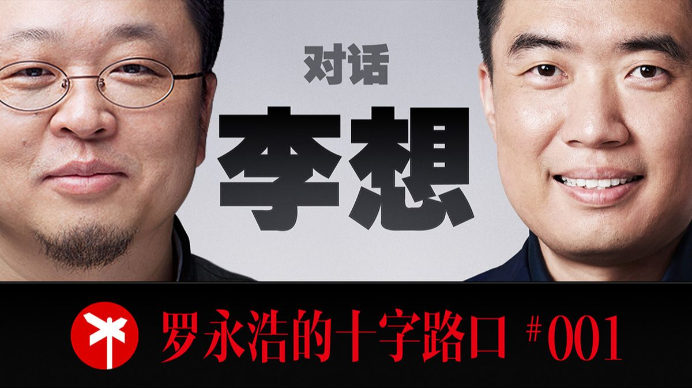

封面来自 B 站 @罗永浩的十字路口 PEOPLE · 罗永浩的十字路口
李想一个把"掌控命运"刻进十八岁的产品经理
掌控自己的命运，挑战成长的极限。
罗永浩 × 李想 · 全长 3 小时 57 分
一 他是谁 李想,1981 年生,石家庄人。连续创业者,理想汽车创始人。
一句话定位:他是中国互联网圈里极少数"从内容/媒体跨界做硬件、并真正做成了"的人 ——18 岁靠一个个人网站月入两万(父母收入的十倍),24 岁靠汽车之家身家过亿,如今理想汽车是造车新势力里最早实现连续全年盈利的企业之一。
他人生有"三个家":显卡之家(后来的泡泡网)、汽车之家、车和家(理想汽车)。而比起这些,有一句他十八岁写在纸上、近三十年没变过的话,更能定义他——"掌控自己的命运,挑战成长的极限。"
二 他的生平:一条"自己挣出来"的路 李想的履历,几乎是"非科班、非天选、却步步踩准"的样本。
他出生在石家庄一个平民家庭,父母是中央戏剧学院出来的文艺工作者,但他偏偏是个理工男。父亲极开明:初三毕业花 8000 块(家里三分之一存款)给他买电脑,玩游戏的时间让他自己定;母亲搞"零花钱实验"——每月给 30 块、花光不补,逼出了他最早的理财和生意意识(初中倒卖漫画书赚差价)。高中他给 IT 媒体写稿、在电脑城装机当上"销冠",高三做的"显卡之家"月入两万。
1998 年,他没参加高考——但他没跟父母争"上不上大学",而是把它变成"上大学还是创业"的选择题 ,用一摞稿费存根赢得了父母的默许。此后是泡泡网、汽车之家、理想汽车,一路走来,真正的苦头全在创业之后:
- 2008 年 ,经济危机融不到资,三个小股东(股份还是他当年送的)在中关村的茶馆里"逼宫",要他和樊铮交出公司——而其中一人前脚刚借走他卡里的 100 万买房。
- 2013 年 ,汽车之家上市前夜,最大竞争对手出 19 块一股(募资价才 3 块)收购股东股份,想搅黄 IPO;他被迫行使优先回购权、硬买回来,才在那年 12 月的大雪里敲了纽交所的钟。
- 2019 年 ,理想第一款车量产却融不到钱(特斯拉被做空、蔚来跌破发行价),他带着一身带状疱疹见了 150 个投资人,把个人全部身家押进去、卡里一分不剩,最后靠王兴的 3 亿美金"续命"。
他选汽车,是因为"汽车是标品、我们做标品强";做"反共识"的增程,是因为他真开过电动车、知道续航焦虑是行业没解决的真问题。理想 ONE 卖了 20 万辆,L9"500 万以内最好的家用旗舰 SUV"订单爆掉,Mega 被黑成"棺材车"又靠口碑爬回来。如今,理想正从增程转向纯电(i8)和人工智能(VLA)。
三 他为什么被采访 这是「罗永浩的十字路口」的第一期 ,李想首度系统讲述 25 年创业之路。
但这期对谈的特别,在于两个"产品经理"的同频 。罗永浩自己做过手机硬件,被黑过、经历过产能地狱、在发布会上当众落过泪——所以他问的很多问题(资金链、被黑、发产品时的脆弱、对自己苛刻),李想一接就懂。说到底,采访李想不是为了听造车八卦,而是想搞清楚一件事:一个没有任何背景、从互联网内容起家的人,凭什么能在最重、最难的汽车制造业里活下来、还活成第一。
四 他代表哪一类人 每个时代都有"天选之子"。李想不是——他代表的是靠极致的"产品能力"和"反共识的判断",在最不性感、最苦最重的实业里,硬挣出一席之地的"产品经理型创业者" 。
往大了说,他还代表了"中国制造"这一代人:科技圈的人才,愿意离开舒服的硅谷式高利润赛道,扎进汽车这种脏活累活,把一个旧产业整个改造一遍。 李想在访谈里反复强调,中国新能源能崛起,恰恰因为"我们这些做互联网的来做车了,而美国只有马斯克一个人愿意干这些苦活"。
这类人,正是今天的大多数人该看的样本——你我大概率不是天选,但李想证明了:没有红利、没有背景,靠一门手艺加一套正确的方法论,也能赢。
五 他的普通与不普通 先说普通。 李想身上几乎没有"爽文主角"的滤镜。他是平民出身的理工男;严重社恐,开那辆太酷的 Mega 被人围观,得戴口罩扣帽子像做贼一样下车;他犯过大错——早年是个"独裁暴君",一天之内 90% 的员工集体辞职;他对自己苛刻到病态(合伙人开 70 万的宝马,他开十几万的 Polo);他也认过怂——"原来我老觉得问题都是另一半的";他会哭,只是"在公司没哭过,哭得最多是对着我老婆"。这些都太像一个真实的人。
再说不普通。 他的特别,不在天赋,而在三样东西:
一是十八岁就笃定、近三十年不迷茫 。当多数人到二三十岁还在找方向,他高中就把"掌控命运"写在了纸上。
二是极度不内耗 。"当我知道自己没有退路的时候,反而就不担心了";遇到天大的痛苦,"第一天痛不欲生,第二天消化,第三天就去解决问题"。
三、也是最关键的——他把每一次至暗时刻,都变成一次根本性的自我改造 。2008 年那场逼宫后,他逼自己做了三个巨变:先学会对自己好,再学会"有困难就跟团队讲、绝不一个人死扛",最后学会站在对方角度处理关系。
他的不普通,恰恰长在他的普通之上 :正是因为犯过那些蠢、吃过那些亏,他才被逼出了一套罕见的"自我迭代"能力——这也正是他对"卓越"的定义:在一条长赛道里,比所有人都更高频地迭代自己。
六 访谈里的"金矿":几个反认知的洞察 这是最该带走的部分。
1. 把"对错题"换成"选择题"。
他没跟父母争"该不该上大学"(那他必输),而是摆出"上大学 vs 创业"让父母一起做选择题。很多僵局之所以解不开,是因为你把它框成了"对错题";换成"选择题",对方才肯跟你一起算账。
2. 卓越的三条共性:选得准、选得长、然后——高频迭代。
他见过无数顶级创业者,总结出三条,前两条人人会讲(选对大趋势、做长周期);但第三条反人性也最关键:在一条又长又对的赛道里,以远超别人的频率迭代。 "优秀,可能是卓越最大的敌人"——别追求完美,真实的市场反馈(他叫它"强化训练")才让你成长。
3. 别一个人死扛——那会让团队觉得自己不重要。
2008 年逼宫他的人后来说了句真心话:"你最难的时候一个人死扛,我们想帮也帮不了,就觉得自己在这家公司不重要了。"你以为的"扛事担当",在伙伴眼里可能是"你不需要我了"。 把困难讲出来,反而让每个人都觉得被需要。
4. 一个不善待自己的人,给不了别人甜头。
他曾苛刻到合伙人开宝马、自己开 Polo,结果员工说"你开 Polo,让我们开什么车"。对自己极端节俭,有时不是美德,而是一种会传染给整个组织的紧绷。
5. 反共识,要靠"真实体验"而不是"前期调研"。
他做被全行业看衰的增程,不是调研出来的——"我从来不做前期调研",而是自己开电动车、亲身撞上续航焦虑。真正的机会藏在"你亲历过的、行业还没解决的痛点"里,而不是在调研报告里。
6. 组织即"基座模型合并"。
他主张团队"正常吵架":分歧的根源是认知不同,把每个人的认知都掏出来摆桌上,"合并成一个大的基座模型,推理结果自然就一致了"。最好的共识不是靠权威压出来的,是靠把所有人的认知充分碰撞、合并出来的。
7. 个人品牌的诚实。
他坦承自己处在一个尴尬的中间态:本想躲到产品后面,但"我学习做企业的能力,还没超过我经营个人品牌的能力",所以只能往前站。他希望大家说理想好是因为产品好,而不是因为喜欢他这个人 ——这是一个创始人难得的清醒。
最后,回到那句他十八岁写下的话——"掌控自己的命运,挑战成长的极限"。 听完近四个小时会发现,这不是一句口号:从辍学创业到三度濒临出局,从被黑成"棺材车"到押上全部身家,他真的把命运一次次从别人手里、从时代手里、从自己的局限里,重新攥了回来。用他自己的话说:"我们困难的时候,往往是我更兴奋的时候。"
（解析完 · 原访谈全长 3 小时 57 分,逐字稿、分角色对话稿、校订记录见同一文件夹）
完整对话 · 全长 3 小时 57 分
乡下姥姥姥爷带大的童年 罗永浩：
好,咱们开始吧。我听说你中学之前一直在乡下跟姥姥、奶奶长大的,对吗?
李想：
我是小学三年级之前,从七个月到七岁(在乡下)。
罗永浩：
是家庭什么原因呢?当时忙不过来没法照顾你?
李想：
因为恢复高考以后,我父母考上了北京的中央戏剧学院,两人同一年考上的。生完我以后就考上了,所以我七个月的时候就被姥姥姥爷接到了沧州老家——他们去读书没法带孩子。
罗永浩：
你觉得这件事对你的成长和性格有什么影响吗?
李想：
我觉得是特别好的影响。我姥姥姥爷给我塑造了一个特别好的环境——在老家,村里出现所有问题,各家各户都来找我姥爷解决。他俩原来都是军人、读书人,也都是离休干部。他们帮人没有任何诉求,就认为必须要帮,天生是热情的那种人。比如战友去世了,孩子被欺负,我姥爷就带着我去帮着解决,让整个村里没人敢欺负——"这是我干女儿"。所以是一个很好的榜样,特别正义。我姥爷去世得早,我姥姥现在已经超过 100 岁了,他八十岁以后过生日,原来他帮助过的所有人都会来参加,那场面非常好。我后来才发现这东西对我的影响那么大——我创业过程中遇到各种困难,身边一些创业者可能就放弃了,但我还能坚持下去,很多时候是受益于姥姥姥爷给我的这种乐观精神。
罗永浩：
我之前看关于你的材料,提到这个的时候,我还以为这事对你童年成长有什么不好的影响——因为现代教育理念会讲,跟爷爷奶奶姥姥姥爷长大的孩子可能会有各种问题。但你刚好是个很正向的情况。
文艺家庭里的"理工男":父亲的开明教育 罗永浩：
你父母都是文艺工作者,但你自己——我从你出道以来,感受就是一个特别"理工男"的人。他们从事的事业,没让你小时候发生兴趣吗?
李想：
他们也希望培养过,比如我还学过好几年画画,但画得实在太差、我也不喜欢。我对戏剧——我有个特长,能背过我爸写的剧本(我爸是导演兼编剧),他们出去演出,演员在台下抽烟,我能提醒"该你上了";剧情我都能记住。但我对唱戏、翻跟头这些表演没兴趣。我对文字方向倒挺感兴趣,喜欢看书。我比较幸运的是我爸爱看书,我们家有一间屋子全是书,所以我小时候书柜里有看不完的书。
罗永浩：
这点其实对孩子特别幸运。跟你家境收入差不多、甚至更好的很多人,父亲不看书,这对孩子小时候是很不好的事。所以我有时候看每个人长大回头去看,童年是幸运还是不幸,有很多维度,其中一个就是"父母爱不爱看书"。
李想：
对,这个观念很重要。小的时候没感觉,甚至二三十岁都没感觉,尤其自己有了孩子以后,才发现这些东西影响其实挺大。甚至我姥爷、我父母传递给我的这些特质,也并不一定是后天训练出来的,有一些是运气,纯运气。
罗永浩：
你自己从来没想过任何文艺方面的事?比如你爱看书,想过当作家吗?
李想：
没有。但我有个受益的点:我的创业其实是从写稿开始的。我高一开始写稿,至少在文笔方面,看书是受益很多的——我作文一直是高分,初中大部分时候都是年级第一。高一时给那些电脑媒体投稿,还是手写的稿子传过去,我第一个稿件写了 5000 字,直接整版发了,拿了 500 块稿费(那时候 100 块钱 1000 字)。后来就持续这么写。
第一台 PC 与"相互尊重"的教育 罗永浩：
你的第一台 PC,我看媒体报道是你父亲花了 8000 块——在那时候算一笔巨款——买给你的,据说你一直跟他央求、说服了他。是这样吗?
李想：
是,初三毕业的时候买的。我父亲那时候开始出去拍戏了,工资之外收益还可以,我估计那时候我们家大概有两三万存款,差不多拿了三分之一买了台电脑。
罗永浩：
那这还挺夸张的。是因为他开明、懂这个趋势,还是因为宠你?
李想：
我父亲特别好。我现在跟孩子在一起、孩子也跟我关系特别好,(学的就是他)——我父亲从来不提条件,他认为你该用什么的时候,就主动给你买回来。比如我是我们小区第一个有 FC(电视游戏机)的,那时候我们都得去破破烂烂的游戏厅按小时花钱玩,他来北京拍戏,看这玩意儿在(北京)很流行,就给我买了一台回去。
李想：
他不仅不担心。他给我的约定特别有意思:你每天都可以玩,但每天玩多少时间你要跟我有个约定——而且不给我定数字,让我自己说。比如我定每天中午玩两小时,他就真让我玩两小时,到时间就收走。我们家小孩也都来我们家玩。
罗永浩：
那你真是很幸运的家庭,亚洲父母很少这样,特别是那个年代。
李想：
而且我真能做到,两个小时就真的不玩了,甚至后边我主动说"我玩一个半小时就可以了"。
罗永浩：
他对你的尊重和信任,也跟你自己的表现有关。很多孩子说两小时、一玩玩四小时,那后边肯定不让玩了。但他让你自己说——其实中午两小时已经很长了,除了吃饭你都能玩,你也不能再长了,不然下午没法上学。在那个年代孩子们玩任天堂都玩疯了、逃学都要玩,你很小就有自律意识。
李想：
我觉得是因为有这么一个方式才自律的——父亲跟我交流的方式、相互尊重,我觉得特别重要。这在那个年代的中国家庭其实挺罕见的,整个院子里我父母是唯一上过大学的,观念相对那个大环境是比较超前的。
罗永浩：
(我小时候)父母还是有不少旧式观念的,所以后来我还去看过精神病医生。你真是特别幸运。
妈妈的"零花钱实验"与最早的生意 李想：
我妈又是另外一种方式,也特别有意思,我后来发现对我特别重要。从小学开始,别的小朋友都是每天一块钱,我是一个月给 30 块钱,我妈要求你自己随便花,但花光了不要来找我要。我第一个月三天就把 30 块全花光了,去找我妈要,我妈一个月没给我。后边我就完全知道怎么管钱了,甚至能攒几个月、花 100 多块买一个我想要的游戏卡。
李想：
对。还造成我一上初中就会赚钱了:那时候一块九的漫画书,我发现批发市场一块二,我就跟同学约好一块五一块六给他们,去批发市场买回来发给大家。
罗永浩：
所以你商业方面的意识很早就有了,也没刻意去做。可能是天生的,也可能是父母早期的教育和沟通方式让你自然培养出来的。你会发现同龄同学完全没这个意识。
李想：
完全没有。我看很多企业家传记,很多人很早——不管天生还是父母引导——就有这方面意识。我父母在商业方面其实也没什么天赋,但他们打小跟我沟通的方式比较健康,产生了一些好的影响。
罗永浩：
那你真挺幸运。我们都看过马斯克的传记,他很小计算机方面就表现出特别聪明,去参加一个大学教授的讲座,听完跟教授交流到很晚,他爸去接他,教授跟他爸说"你一定要给这个孩子买台计算机,要不然你会后悔"。但你比他还幸运——他是借助外力才实现的(你父亲是主动的)。
初中的"电脑荒"与重建的世界 罗永浩：
你是高中开始给 IT 媒体写稿,还是初中就开始了?
李想：
高一开始。初中我最开始倒漫画书,最后把挣的钱都买了电脑书——《大众软件》《电脑报》《计算机世界》《微型计算机》,还有合订本,全买了。
罗永浩：
你在小学初中的时候,就感到自己是个"跟同学比更厉害"的孩子吗?
李想：
没有。其实初中时我受到的反馈并不好,因为那时候没有电脑。我上第一堂计算机课印象特别深——铺着地毯、空调房,接着黑白显示器的中华学习机,还有 Apple II,我一接触就觉得"这玩意太厉害了、太神奇了",就开始学电脑。但初中最难受的一件事是:我看了电脑书,想跟班里家里有电脑的同学聊,那时候买一台 386DX 要三四万块(我印象特别深一个牌子叫 AST),我家真买不起。有的家里买了,你跟他聊,他就说"我有电脑的时候,你还没见过电脑",就不跟你玩了,那个挺受打击的。
罗永浩：
有电脑的同学在一起玩,小孩不懂事,容易表现那些残酷的东西。
李想：
也没太大打击,就是羡慕有电脑的孩子。但其实你重新树立了一个世界,在这个世界里,你说不出来为什么就是喜欢,感觉你属于这个世界——一摸电脑就有这感觉。
"总经理"的志向与外界反馈 罗永浩：
你小时候有没有那种天生的使命感——不一定跟同学说,但自己觉得是要做大事的?
李想：
小时候有过一件事。上小学的时候有个思想品德课,大家说长大想当什么,我说"我想当总经理"——那时候"总经理"是最大的词了(后来才有 CEO、董事长、董事局主席,词越来越大)。那时候在班里是被同学嘲笑的,因为大家都说当战士、科学家、医生。
罗永浩：
这个在那个年代,在老师学生眼里肯定是个古怪的愿望。
李想：
但其实我做的所有判断选择,都是有一个真实的外界反馈,并不像大家想的"天生就有这么个初衷"。
罗永浩：
我小时候可能比你情况更糟,我在很落后的地区——东北山沟里长大。我小时候要讲一些雄心壮志,那是被无情嘲笑的。同学老师倒不至于,老师就是会古怪地笑、明显不屑;最打击我的是我亲哥,他说"你明明是个傻×,为什么有这么多不切实际的想法",我说我怎么傻×了,他说"我们都是傻×,你为什么不能认清这个"。但我老觉得我可能是能做一些大事的,这个在小时候被打击得特别厉害,连我父母虽然没打击我、也没鼓励我,觉得我有点异想天开。
李想：
我都是靠外界反馈来构建自己的认知。我第一次有"当第一"的感觉是作文——我各科成绩都不好,就作文好。但真正一个稳定的循环开始,是买了电脑以后,尤其初三那个暑假,我就彻底变成另一个人了。因为之前的电脑理论知识真的很扎实(只是上机操练不够,那很快,一天就全解决了)。
李想：
对,相当于我做了一个特别好的预训练的基座模型,后边推理(reasoning)就变得很好了。我最重要的第一个反馈是:我买电脑的那个商家,原来在一条流量不多的街上开小门店,后来进了最大的电脑城。整个暑假我特别开心,去电脑城帮他组装电脑——他生意好、人手不够,而且我比较能说,别人特别相信我给的配置。
罗永浩：
而且你长了一张特别让人信任的脸,卖电脑肯定有优势。
李想：
那时候印象特别深,英特尔的 CPU、华硕的主板、飞利浦的显示器我全玩过。他卖一台电脑赚 800 到 1000 块,每装一台给我提成 150 到 200 块。一个暑假我装得最多、卖得最好,变成整个电脑城的"销冠"。然后上高一,整个学校都知道"装电脑找李想";写稿也是,稿件不是随便写的,都是从用户反馈那里获得的,而且用户量还挺大。
从"显卡之家"到泡泡网的前传 罗永浩：
你高三就做了"显卡之家"。我知道你辍学做了泡泡网,但不知道显卡之家后来就是泡泡网——我当年也是显卡之家的忠实读者,这次准备采访才发现都是你做的。
李想：
其实大家容易忽略一段:我并不是直接做个人网站的,前面还有两年时间在惠多网的 BBS。那时候我跟着石家庄(一个站长)学,上惠多网——那时候还没开放互联网,拿 Modem 拨号上 BBS。那时候珠海的已经是丘波、雷军了,深圳的是马化腾,都是叫"IT 英雄"的传奇人物。石家庄也是一个比较火的站,我在帮着做。
罗永浩：
你启动做网站的时候,都是自费的、用稿费做的吗?
李想：
都自费的,那时候上网费很贵。我高一上惠多网,高二开始上互联网。主要是有了互联网以后,从杂志上看到很多人建网站、放(横幅)广告就能挣到钱。我最开始很简单,把自己写的内容放到自己网上(跟杂志约定发一周后我可以放网上)。后来发现还不行,就去看一些国外网站,把他们的内容做简单翻译、找一些新闻,每天更新。
罗永浩：
你当时高三大概 18 岁,月收入就有 2 万多,是你父母的差不多十倍,这没错吧?放到哪个国家、哪个时代都是很离谱的事。你那时候没有因为小小年纪挣这么多钱,产生特别强大、像个"超人"的感觉吗?
李想：
我觉得首先,从高中开始我印象特别深——初中同学跟我分到一个高中,一个暑假后,我有电脑、跟他聊的时候,他就成了个"菜鸟"了。第一我做到了整个电脑城装机量第一,第二同学、亲戚都知道"装电脑找李想肯定没错"、装完都满意。从那时候我形成了一个对自己的认知,跟今天没变过——算下来接近 30 年没变过。那时候我在纸上写下一句话,跟今天一模一样:"掌控自己的命运,挑战成长的极限。"
罗永浩：
所以你其实从青春期开始,就没怎么对未来迷茫过?
李想：
没有迷茫过。各种打击肯定有,无数的打击都有。
罗永浩：
我做过几年教师、去高校巡讲,跟学生互动很多,感觉很多即将毕业、甚至读研的孩子,对未来还是很迷茫,不知道自己真正想干什么。我觉得你跟乔布斯、比尔·盖茨很一样的一点,就是在很早的年纪接触了计算机、热爱它,并且很早就确定了自己终身热爱的方向。这个不知道是天生还是后天环境塑造的,但反正是非常幸运的事。我比你大九岁,也很早接触计算机、一上手也完全沉迷,觉得很神奇;但我小时候是非常严重的文科生思维,又有严重的不自信,所以从来没觉得这个行业跟我有什么关系,直到移动互联网那会儿才心里蠢蠢欲动、觉得"好像我也能做手机"。回头看那个意识来得特别特别晚。
李想：
这些(为什么)很难琢磨,你根本不知道发生了什么会导致这个。
罗永浩：
你十八岁就有这样(的笃定),真是赶上硅谷黄金年代那么好的时代机遇——其实住硅谷的年轻人也有很多从没想过去干这个,所以命运这种安排有时候确实挺神奇的。
"我有员工":个人网站的根本不同 李想：
我做个人网站,跟其他做个人网站的有个根本性不同——就是我有员工。我当时总共有两个员工:一个在加拿大上学,远程帮我写内容、拿美国和加拿大的信息,他能直接接触英伟达,所以那时候我们能拿到最早的(显)卡。
罗永浩：
这么离谱。这个人是怎么在互联网上勾搭上的?
李想：
那时候是用 ICQ 认识的,他是我们的用户。还有一个写文章特别厉害的(员工),我们三个其实是合伙干的。
罗永浩：
你们同龄就表现出这种不一样的优秀品质的孩子多吗?我怎么感觉好像都得比你大个好几岁才有这些行动?
李想：
我自己认为一个人不行、做不到最好。包括你刚才讲我收入比父母多十倍,但我又不跟父母比,我跟那些做得更好的比。那时候我 ICQ 群里聊的都是一些海归,做(网)站以海归为主;而且硬件和软件是分开的——做硬件的是我们一拨,做软件的像华军软件园是另一拨。
罗永浩：
那时候你没有产生羡慕、想去留学吗?因为他们明显在资讯方面比你们快很多。
学习的"折磨"与偏科 李想：
学习还有一个问题:今天我也有这样的困惑——上课的时候,我觉得 90% 以上的课,其实 15 分钟这堂课所有东西就讲明白了,老师非要讲 45 分钟。这种方式我感觉上课有时候是一种折磨——15 分钟讲完,再拿 30 分钟把大家讲得稀里糊涂。
罗永浩：
那你要是特别学霸,有可能就去了科大少年班之类的。你太聪明了,所以从学习考试上得不到正反馈。还有你是不是不愿意学的科目就不好学、特别偏科?
李想：
对。我比较好的是物理、语文、历史,连政治我都很好,但化学、数学就比较差。
李想：
没有,始终没有。但我的代码到最开始做网站的时候——为了网页加载速度快、流量快,我都自己手写,HTML 这些网页代码我会写,包括一些简单的(脚本)我也会写。
罗永浩：
你高三要辍学、不考大学了,跟父母之间有争执吗?还是他们很痛快就被你说服了?
李想：
我用了一个比较好的方式:我并没有跟父母讨论"是否上大学",我跟父母讨论的是"上大学还是创业"——跟他们一起做个选择题,不是做个对错题。我一直强调这件事,大家很多时候太容易做对错题。如果跟父母说"上不上大学",我肯定赢不了。但我把它摆出来,推理上大学几年以后我可以去哪当编辑、收入多少;而这边——因为我当时还未成年,稿费写的是我母亲的名字,要到邮局汇款取钱、都留个存根,一摞存根放在那——我说"妈你把这拿出来,我这些年挣了这么多钱,一起数一数"。
罗永浩：
不要说你父母那么开明,即使是特别保守、观念迂腐的父母,如果儿子 18 岁就比自己挣得多十几倍,他可能也觉得"我这孩子不是正常孩子",没那么大信心粗暴干涉了。
李想：
还有一个要素:基本上我们这一代人的父母大部分没上过大学,都是把"上大学改变命运"的初衷放在孩子身上,在他们看来是一个必须攀登、不能放弃的高峰。但我父母读了大学、也就"去魅"了——觉得读了肯定好,但如果孩子有更好的选择也可以商量。
童年创伤:被欺负与"反抗一次" 罗永浩：
怎么听着全是幸运呢,给我讲讲童年创伤吧——18 岁以前有什么挫折创伤,一点都没有吗?
李想：
我刚回到石家庄的时候,整个小区的孩子都欺负我,因为是刚搬来的,而且我一嘴沧州口音被嘲笑。我刚回学校是插班生,坐的位置是老师那张桌子的侧面,没有正常座位。那个阶段挺痛苦的,小朋友都欺负我,比我岁数大的人——我今天脸上很多疤,都是小学时被他们抓的,把脸都抓烂了。
罗永浩：
你进入了一个陌生环境,所以不敢反抗。我也因为转学挨过打、被欺负,但没说把脸都抓烂了。小孩坏起来会坏到难以置信。那个时候报警也没用。
李想：
我是沧州孟村县的,小时候练过八极拳(沧州是著名习武地区),其实我打架很厉害,我哥就是个武师,我每天跟一院子的学生跟他练。
李想：
你进入那个环境时是有自卑感的——他们都说普通话,你说话他们听不懂;你晒得特别黑(在老家),牙是黄的(沧州那边的水有水碱)。你觉得你不属于这里、自己也不自信,他打你的时候你也不反抗。自从我妈说那句话以后,我说"他们老欺负我,你看脸都抓成这样了",我就开始往回打,先把那个最厉害的(比我大两岁的)打了。我初一初二一直是挨打的,到初二下学期被打急了,所谓"兔子急了也跳墙"。反抗那次被打得特别惨,但那个惨特别值——他就知道你是会反抗的,然后就再也不欺负你了。后来学校门口那些流氓抢钱,到我这开始管我叫"哥们";附近流氓听说我反抗的事,也都过来"套近乎"。所以其实反抗一次就管用,我变成了小区的孩子王。
罗永浩：
(我小时候也是)被逼急了反抗一次以后,学校附近的流氓再来欺负人,上来就跟我"套近乎"了。
李想：
我后来跟大学生交流也常讲一个命题:不管是校园暴力还是长大走进社会,你被欺负的时候,其实你就要很凶狠地反抗一次。我甚至把这个当成真正意义上的"成人礼"。有的人到三四十岁还很懦弱、一直被欺负。当时我还特别担心反抗以后小朋友会孤立我,结果打完以后小朋友都跟你套近乎,上来就叫"李哥"了。
没上大学:遗憾、"一技之长"与辍学创业的成功率 罗永浩：
你要重新选择,还是不会上大学,对不对?你对没上大学有遗憾吗?
李想：
遗憾肯定有——你不可能什么都获得,还是有取舍。我觉得还是少了一份人生经历,那个经历可能也挺珍贵的。听身边朋友讲他们大学时代那些快乐的事,我心里还是有一点"还有这样的东西"。后边我也上了一些商学院,我从来不缺课,很多时候也是一种补偿。但回过去是不是这么选择——因为每一项都有得有失——我还是会选择创业。
罗永浩：
就像比尔·盖茨那种,赶上时代机遇、自己很早就证明在这是有可能做成的,确实没理由去读书。但是少数这样的人的成功,有时候会在高校里形成一种氛围,觉得"有个机会就该早早出去创业",其实这个成功率特别低。
李想：
我也遇到过这种问题。我们招聘肯定还是要求本科,就有人说"凭什么你没上过大学,你就要招本科?"我说两方面:第一,如果你真的水平特别高——比如你是某技术社区的大牛、能证明这个,你没有学历我也找你;第二,我当时面对的不是"上不上大学",是"创业和上大学",而且我选择创业时已经有一个访问量很大的个人网站、已经证明了自己,不是盲目的。所以"你该好好上大学还是好好上大学,要么你有一个真能证明的一技之长"。我去高校互动也是这么说的,不鼓励他们轻易辍学;大学生辍学或刚毕业就创业,成功率其实很低,除非他的自信是有逻辑和理性基础的。
罗永浩：
你没上过大学、甚至没上过班(直接创业),后边做公司,会因为缺乏这方面经验导致一些误判吗?有这类案例吗?
李想：
肯定会有,同样是有利有弊。弊是很多东西你没法感同身受,不知道他为什么那样反应;利是很多时候你可以最理性、凭直觉去做判断,不需要那么多顾虑——因为很多顾虑其实会影响判断。
罗永浩：
举个例子,你的员工找你加薪有两种方式:一种是坦诚讲"我为什么该加薪";另一种是他希望你加、你没及时加,他觉得表现不错没得到认可,就决定辞职(未必真要辞)。你通常更接受哪种?
李想：
我觉得这是一个训练的过程。最开始肯定不知道怎么做——比如他说要辞职,你说"那你赶快走吧",直接就这样。后来就吃亏:你发现这人去了别的公司、对自己影响很大。训练到现在,如果他要涨薪,挺简单:不要做对立。核心是——第一你先接受他这个需求;第二让 HRBP 和财务跟他做内外对比分析,我们会发现其实很多时候就是给低了——拿他现在的工作,我们出去找不到一个更好的,那就应该给人家涨,这有啥可犹豫的。
罗永浩：
我之所以问,我有个朋友跟你一样大学就创业、很快挣了钱,因为没打过工,他有个奇怪反应:员工坦诚沟通加薪他相对容易接受,但如果对方假装辞职看他留不留,他甚至会很愤怒,说"想加薪就直说,为什么还要假装离职"。
李想：
每个人想法不一样,这没有对错。我去打工时如果老板工资给低了,我其实不好意思跟他坐下来谈,我可能会辞职看他留不留——这对我容易很多。我一个比较大的转变是:刚创业那些年,我关注的都是"事",看不到"人"的层面,听起来像特别理工男、纯理性的思维,那时候大家也讲"对事不对人"。但后来规模做大、吃了各种亏以后,你发现其实人才是最重要的——先有人再有事,应该先把人对待好,事情就水到渠成了。这也是吃了非常多的苦头。
第一次危机:互联网泡沫与北上的决定 李想：
其实很多事没那么顺。我是 1998 年高三就出去创业了。当时我把我们所在的信息港里第二名——一个叫樊铮的——拉过来跟我一起做(大家把个人网站放在信息港里),他技术好、会管服务器,内容比较差;我抓内容、抓产品,我们俩一起创的业。其实第一年就出问题了:美国互联网泡沫破灭了。我们原来放的都是美国厂商的通用广告——有个 DoubleClick 之类的广告联盟,一个 banner 放上去显示,显示 1400 次给 10 到 30 块钱,我们靠那个收入。99、2000 年美国互联网出问题,收入忽然就接近清零了。
李想：
我们没去谈过任何广告客户,就是嵌入这些广告联盟自动给的广告挣钱。在石家庄接触不到客户,为了活下去,我们都想着去做系统集成。但很意外,一个中关村在线的销售说"你们为什么不来北京?"所以 2000 年初春节一过,我就来北京了。
李想：
忘了。但那时候作为我那个年纪是不缺钱的,我们一直比较省,没怎么缺过钱。来北京时他(那个销售)已经拉到了爱国者、华硕这些国产品牌客户,这么着才真正开始商业化。
罗永浩：
你为了创业来北京那一次,跟平时去买东西、发稿子的时候,感受有明显不同吗?
李想：
没什么特别感觉,我高中时代就开始去各种地方了,去北京比较多(因为不差钱)。计算机世界这些经常邀请我来参加活动、当评委(那时候有 DIY 大赛),因为我是知名写手。
李想：
大家也不知道年龄,那时候没有在线、没有直播,装成熟点就还能唬住。我还印象最深,那是我第一次坐飞机,去苏州工业园——那时候明基(我们喜欢叫 BenQ)的显示器在那投产。去的时候在阳澄湖吃大闸蟹,第一次吃,觉得没什么肉。两件事特别怪:先上来一个洗手水(茶色的),还好我没主动喝,结果有个媒体的人拿着喝了;第二是上来大闸蟹一人只有一个——我们吃海蟹都是上来一大盆四五只,一人只上一个,我当时觉得特别奇怪、还特别没肉,那一堆器具也不会用,就跟吃海蟹一样啃。
罗永浩：
真羡慕啊,你很年轻就有赚钱的能力。我小时候想法很多、看书很多,但经济上没能力,所谓"读万卷书行万里路",我那"行万里路"都是 30 来岁以后才开始的。
独自北上:为什么聪明人不敢离开家乡 罗永浩：
你来北京创业没什么特殊感觉,只是说要到大地方做更大的事?
李想：
是,而且我特别喜欢北京。我对石家庄一个很大的不满意,就是身边已经找不到能学习的对象了——我特别需要反馈。现在我也特别喜欢找北京的人聊,这里牛人太多了。那时候来北京,谢霆锋那个 FM365 的广告(让你觉得这才是你该来的地方)。但一直下不了决心,多亏当时邵震跑了趟石家庄跟我聊,让我下定了决心。
罗永浩：
你已经去过很多次北京,但真要离开家乡还是犹豫了?
李想：
因为他们都不去,所以是我一个人来的北京——三个合伙人那俩都不肯去,石家庄招的一些员工也都不愿来,就我一个人来。
李想：
可能跟那个城市的氛围有关吧,很少有人出去。我初中同学关系都很好,真正离开石家庄的就那么三五个。我小时候在家乡,有一些特别特别聪明、优秀的人,我读书时很佩服、很喜欢他们,但这些人由于我不知道的原因,都对离开家乡这件事打心眼里恐惧。我离开家乡五六年、七八年回去,发现他们心态已经完全不对了——老牌子(老气横秋),小时候也都有雄心壮志。我始终不知道"不敢离开家乡"这个深层心理和先天后天因素到底是什么,特别奇怪。我来到北京时是特别开心的,前所未有的开心。
李想：
但我们刚来北京居住条件比较差,印象特别深,在(北京)林业大学租了个 30 多平米的房子。
罗永浩：
不是地下室已经不错了,穷小伙来都是先住地下室。
李想：
当时一个月有几万块钱广告收入。白天在这地方办公、晚上睡觉。大概做了三个月,钱挣得更多了,就在硅谷电脑城放了个公司。
硅谷电脑城、CEO 名片与 24 岁身家过亿 罗永浩：
我看那时候你那个泡泡网,就打了一个 CEO、首席执行官的 title,那个时候这还是比较新的名词,之前不都叫总经理吗?
李想：
学国外啊,那时候大家都崇拜硅谷、特别洋气,所以我当时说要去"硅谷电脑城"(就因为崇拜硅谷)。
罗永浩：
你 18、19(岁),也已经挣了很多钱,印了个名片,上面是 CEO、首席执行官,那个时候自己感觉还是特别意气风发的吧?
李想：
所有的反馈都特别好。困难很多,但其实机会无限。
罗永浩：
你到那边业务好起来、开始批量招人的时候,大部分员工都比你岁数大吧?他们有什么异样的感觉,或你因为这个有什么不一样的感觉吗?
李想：
没事,我说"对事不对人",我几乎不在乎别人的感受,那时候还是比较粗暴的——就一间屋子,沟通基本上简单粗暴直接,伤害了人也不知道、也不关心。我们的面试基本上都是通过 QQ(OICQ)——特别"硅谷",哪有什么正常面试、哪有 HR,要到上百人的时候才有 HR。
罗永浩：
没有正式 HR 之前,帮你扛 HR 工作的是谁?
李想：
邵震,合伙人。所以开始就是纯做内容和纯做技术的两伙人。技术团队都在石家庄,因为他没来、但愿意远程做。我们认识的技术人都很怪——一个技术大拿是石家庄拖拉机厂的下岗职工、自学的,在那管 IT,技术水平很高,尤其成本优化、服务器优化特别好。到了汽车之家之后,那帮(技术)人才来北京。
罗永浩：
我看早期报道,你 24 岁、05 年就身家过亿了?
李想：
差不多,那时候按互联网泡沫的 PE(市盈率/市销率)算的——你有个收入、有个利润,给你算个市销率、市盈率测算出来的。
罗永浩：
你很早这么年轻就实现了可以说是终身的财务自由,这对你后边的持续创业和整个人生,今天回头看有什么明确的正面或负面影响吗?
李想：
没有,是个很中性的。因为这个财富也是逐渐积累的,所以没觉得特别怎么样。其实我创业这么多年,真正融资是从理想汽车开始的(因为实在太花钱了),前面都是靠自己挣钱滚动起来——泡泡网和汽车之家其实没融过资。
汽车之家被收购控股 罗永浩：
我看以前媒体报道,(汽车之家)是因为资金问题引进大股东后被夺权了?
李想：
对。那时候也没融资,是直接卖的股份。投资机构如果想买股份,原则上会让创始团队控股,但他买了 55%——他不是投资机构,是买业务,他需要这个互联网媒体业务,觉得你们走了也没问题,要买一个控股权。而且那笔钱也是我们化解内部矛盾的一个重要要素。
罗永浩：
相当于你们就给他打工了。我看到一个理论:计算机革命之后,才会批量出现 20 多岁的亿万富翁——之前的工业商业时代,财富积累到亿万级别,即使聪明绝顶的天才也要二三十年。这些人 20 多岁就财富自由了,所以除了极个别,绝大多数从基因上不能终生过那种"花天酒地、纸醉金迷"的生活——因为人需要价值感,整天这么生活很多人受不了,又回来干活了,而那时候钱已经很难刺激到他。所以更多人愿意去投身高风险、周期长、偏理想主义的科技项目,或出资资助年轻团队,都是那之后才出现的。你觉得这理论有道理吗?
李想：
我比较像。我真正有了现金其实是 08 年那一次(他收购),那时候比较有钱了、都是现金,一个比较大的变化就是买了两三套房子(现在住的房也是那时候买的),还买了很多车——自己喜欢车嘛,跑车也都买了。很多人说我现在买跑车,其实我十几年前就已经买超跑了。
李想：
当时一个很重要的目标:谈得很清楚,整个汽车之家归我们管理,甚至他收购的另一个业务也交给我们管,所以我和秦致可以管一个更大的团队了——那团队的收入、人员规模是我们的两倍,我们管的是原来的三倍。秦致是 CEO,我是总裁,樊铮是 CTO,我们三个特别强、互补性特好,那个阶段基本上战无不胜,从几千万的收入很快做到大几十亿。
李想：
到北京找的。石家庄合伙人樊铮管技术,我管产品和内容,秦致管整个公司商业和运营,他是 CEO,我是总裁,樊铮是 CTO。2011 年其实有第一次上市机会,但因为支付宝的 VIE 协议,大家都上不成了。那时候我股份很少,只有五个多点,所以我说上完市我就想再去创业。那次没上成,我又想走,跟秦致说"你做 CEO,我就可以走了",他说"不行,你把我招进来,我跟你拼,至少你得把公司搞上市、往 100 亿收入做"。100 亿我没答应,我说咱们做到上市。到 2013 年上市以后,我就开始在外边找机会了。
汽车之家的遗憾与再创业的方向 李想：
我最痛苦、最遗憾的一件事是:从 2009 年以后(汽车之家)太容易了,没遇到过任何能给我们构成威胁的竞争——我们整个商业体系、内容产品、技术都很强。但很遗憾,我们只放在了一个垂直网站上。所以我说我要去寻找下一次创业,要找一个更大的、不能做这么垂直的、不能做一个容易赢的。13 年以后我做了一些天使投资,大部分都打水漂了,所以我说我投资肯定不行。投资时往往他有个好想法我就投了,但忽视了——原来很多人是你自己带起来的,这些人后来成不成,其实跟"事对不对"一样重要。看了很多方向,但其实最想做的真的是汽车,只是一直不敢下决心。
李想：
做汽车之家纯粹是市场选择。那时候电脑已经进入负增长了,在负增长的市场你作为老三怎么竞争(那时候还不会做管理),而且浪费生命。所以我要做一个新的——在旅游、房地产和汽车里选了汽车,因为汽车是标准品类,我们做标品特别强;旅游是服务,房地产每个城市完全不一样、没什么产品力可言、其实是销售行为。
罗永浩：
所以你做汽车之家并不是因为喜欢汽车,但实际上你也特喜欢汽车。
李想：
我最开始一点都不喜欢汽车。做汽车网站是樊铮很早建议的,他是个汽车迷,那时候我们每年来北京看车展,他们跟过节似的只看车,我觉得车展特别无聊。直到 2003 年才在他们建议下买了第一辆车(那时候有钱了),后来慢慢喜欢上车的。我是先买了车、开始了解车,等决定做汽车之家时就特别喜欢车了。
两个偶像:宫本茂与乔布斯 罗永浩：
你早期有什么商业上或科技上的偶像、英雄人物吗?我们当年不都看比尔·盖茨写的《未来之路》。
李想：
我一直有两个偶像,一个是宫本茂(任天堂)。这个公司挺梦幻的,特别神奇、特别不正常一个公司。我比较小的时候一直喜欢宫本茂——那时候你买《Game 集中营》这些书里都有这些人物介绍。任天堂任何一代游戏我全买。我那个年代用的全是盗版(板卡、机器都是仿的),也不知道正版盗版,只知道是个日本游戏公司卖的。家里终于给我买一个的时候,已经是红白机流行很多年、变得很便宜了。偶尔用过一两个正版,就觉得这个怎么精美得不正常(正版都没有"多少合一",盗版都是 100 合一、200 合一)。后来就像网上说"都欠周星驰一张电影票",我觉得我小时候那么巨大的快乐全是靠盗版。所以后来买 Switch 时,我生平第一次开了任天堂的账号,虽然忙、累积玩的时间不超过十个小时,但我老觉得这是欠宫本茂的,就一直订阅着不取消。
罗永浩：
你小的时候是宫本茂,大点真的是乔布斯。你觉得乔布斯特牛是从什么时期开始的,是 iPod 吗?
李想：
从 iPod 开始。他被赶出苹果那十几年在硅谷被当成笑柄,那时候我对这个人感受挺奇怪的,觉得是个怪人。但我生平买第一个 iPod 时震惊了——那时候还没正式引进,都是水货商代理、卖得贼贵。第一感受是被它的工业设计吸引,太漂亮了、像个科幻产品;结果买回去接上电脑把歌倒进去以后,我就疯了:怎么会有这么好用的东西,它比在电脑上选歌播歌还方便一万倍。我很早就买过 Mac,对 Mac 没啥感觉,因为那时候 Mac 确实有兼容性问题和软件生态严重不足的问题(还要买软件装虚拟的 Windows)。而且当时对我影响挺大的还有一件事:我人生中最喜欢的一部电影是《玩具总动员》,我没想到其实是他的公司(皮克斯)做的、他是最大股东。我就觉得我就是里边的牛仔,那个感觉太好了,后边皮克斯所有动画片我都特别(期待)看。
罗永浩：
所以你这辈子商业和做产品科技方面的两个偶像是乔布斯和宫本茂。
李想：
对。我研究乔布斯,除了看各种视频,最多的是去研究 Tim Cook 和乔纳森(Jony Ive),把他们交叉(验证),因为很多书写的他一定不是那样的人。交叉以后发现,才是个符合真实的场景:大家总拿乔布斯很早的"粗暴"举例,但从乔纳森那里看到的,其实是一帮人在建立信任以后的"高要求",而不是简单粗暴。我们年轻时候比较傻,就学着简单粗暴,其实不是——是先建立了信任,有了信任、大家都有高标准,只要没达到就开始吵起来了。但如果没有这个信任和合作基础,这样做会把事情搞糟,而且会在"心事"上花很多时间。这是非常重要、被很多人忽视的。
Model S 与增程技术的渊源 罗永浩：
再一次创业为什么想到汽车,整个前因后果能分享一下吗?上市以后移动互联网机会也挺多,你原来的成功经验都在互联网上,为什么没做那个?是想追求一个高难度、长期的东西?
李想：
一方面高难度,另一方面还是得延续——我到底能不能赢。在房地产、旅游和汽车里选汽车,因为我觉得汽车能赢(汽车是标品,我们做标品强)。汽车上市以后我就开始准备下一次创业。创业时我有点跟雷军很像,先做了一些投资了解行业:有做汽车后服务的、有做汽车设计公司的、有做汽车 HUD 的。因为我觉得汽车是个超级大行业,工业生产制造应该是仅次于房地产的最大行业。
李想：
对我影响最大的还是 2014 年 4 月 23 号,马斯克给我交付 Model S 的时候——我是第一批买家,一开,这就是我想要的。因为我之前开过电动车:我有宝马 i3,还有雪佛兰 Volt,我是最早的电动车用户。大家觉得特斯拉最早,其实在此之前宝马 i3 我也买了(纯电动,那个非常小)。特斯拉的 Roadster 比它更早,但 Roadster 不是个正常车、是个改装车。宝马 i3 在 Model S 之前推出,但只有 200 公里续航。还有一个雪佛兰 Volt 是增程式电动车——当时通用拿了政府救助后(奥巴马要求必须做新能源车),花了 20 多亿美金做的,是被国策推动的。我们一开觉得"什么破玩意儿",但这个技术是个非常有意思的技术,所以我比所有人都更早了解增程技术。
罗永浩：
在你们之前,增程车全世界有任何一家卖得很大量吗?
李想：
没有,都属于很边缘的车型。我对汽车很了解,跟中国这些汽车厂商老板都熟。但那是跟大老板、市场部公关部熟,跟研发体系其实不熟,那还都是从零开始的。我开完 Model S 说"这就是我想要的",而且那时候马斯克还没那么神话,我说他原来也是做互联网的——对他还是毁誉参半,PayPal 都能做,我说我也不能怂,所以我就开始做规划了。
罗永浩：
你从互联网公司创始人转型做硬件,没感觉很大困难吗?因为全世界互联网公司做硬件基本上没成功的,只有特斯拉一家。
李想：
还有一个其实就是雷军。但严格意义上雷军不应该算做过互联网公司,因为他前面还是软件时代,卓越网(也很重要,做了没多久就被资本收购了)。而且他最开始做的是米聊、MIUI,验证了用户喜欢才做的小米手机,后来发现天分在硬件上。有一次我听一个人说得挺有意思:这几个手机厂商虽然都很牛,但严格意义上都别往互联网公司扯。原因是:一个公司手里有一个每天一两亿、两三亿人在用的硬件,你做一个互联网应用,直接 OTA 推送到别人手机的第一屏左上角甚至 Dock 栏都可以,在这种情况下,华米 OV(华为/小米/OPPO/vivo)一个互联网应用都没做出来,所以这些公司再吹自己是互联网公司就纯扯淡了。
李想：
我觉得这有点像"大家都用中移动手机号,所以中移动推出聊天软件就一定成功"——这是很多人过去的假设,但这个类比不是特别相似。用户在选择任何一个真正高频需求的时候,都会重新定义自己真正的需求是什么,并不会因为一个企业"搂草打兔子"就能把这个兔子打到。但很多人尤其资本还是相信这事,就像早期大家觉得"你有微信、做电商肯定行"。
两类组织方式与 AI 时代 李想：
另一个角度是:不同的事的成功,会决定组织方式的不同。我经历过完整的互联网公司(做到大几十亿收入),也完整做了一个智能汽车,本质上组织方式和方法论是截然不同的。从科技公司的角度,全世界最成功的组织方式有两大类:一类是有特别严格的流程,因为品类很复杂、是个木桶理论(一个环节短了就不行),比如手机终端、操作系统,华为表现非常好,IBM 那些年也非常好——这是流程为主的一类;但它做互联网和人工智能就会弱一点,因为组织适配性的问题。另一类是不依赖流程、依赖更高的人才密度,用 OKR 这样简单的工具连在一起,对人才密度要求非常高、招的人都特别贵——中国互联网收入最高的字节、美国利润最高的谷歌(超过 1000 亿美金)都是这类。这类做平台、做巨大创新、做技术研究都非常好(做 AI、做模型也很好),但做复杂硬件时就明显弱一些。
罗永浩：
所以你做理想起步的时候,这个就想清楚了吗?
李想：
也没有,是过程中认真认真去学的。再往后,我也在想:我们做的是智能汽车,如果是人工智能,组织方式是否需要变化?我们接下来想做一个尝试。过去我们人才不够,现在能找到最顶级的人才了。有没有一种可能:你的主体依赖高人才密度、用 OKR 连接,但为了适配硬件、供应链这些特殊性,我们把流程"变成工具",而不把流程当成"身体"——身体是高密度的人才,把经过最佳实践的流程变成人才所使用的工具。
李想：
我是从一个地方找到的感触:过去 2023、2024 年,所有做 AI 的人都认为基座模型可以解决一切;到 2024 年下半年和 2025 年,大家做了一个最重要的转变——开始让模型去使用现成的工具。所以这两个并不冲突。你能力要提升,但你再好的建筑设计师,也不能拿手去建一个楼,该用工具用工具。如果一个更好的人工智能组织应该跟人工智能生产力一样:该有能力有能力,成熟的工具该拥抱去拥抱。那为什么一个组织不能向人工智能学习?
罗永浩：
说到这个,我就想当时 OpenAI 推 GPTs 的时候,他认为以后不用程序员了,你通过那些 prompt 就可以自己弄一个按需求生成的应用,配着一个万能的大模型什么都解决了。我当时就感觉,大模型再厉害,要完全消灭人机交互、消灭工具、消灭软件应用,还很遥远。当时他发布 GPTs 时流露出那种"不用像旧时代那样建一个 OS、软件生态招开发者进来"。我们公司内部还激烈讨论,产品经理们很沮丧,觉得将来既然这样产品经理也没必要了。但现在 Agent 这些陆续出来、开始遍地开花的迹象时,就觉得工具始终离不开,而且好工具和烂工具天壤之别。如果真的工具和应用没价值了,那我这种产品经理型的、又搞不了基座模型,可能就想办法退休了。我觉得至少十年甚至更久,工具的价值、应用的价值、人机交互的价值始终都存在。
组建硬件团队:先找合伙人、找对供应链负责人 罗永浩：
你开始转型做硬件公司,最初团队是怎么组建的?我自己也经历过做硬件公司,特别好奇:你一开始是设定几个关键岗、每个岗都找一个胜任的,还是找一堆够用就行的人,在过程中把团队磨出来?
李想：
我受益于做理想汽车之前有秦致、樊铮这样的角色存在(虽然他俩到今天都没过来),所以我知道:建立一个好的合伙人团队是第一重要的。而且合伙人一定跟我完全不一样、必须强互补,又大家有共同相信的东西。所以我一上来先找合伙人。硬件上,你知道乔布斯当时先找了 Tim Cook,所以我说我得先找一个 Tim Cook 这样的、超强执行力的 CEO 角色。
李想：
我对执行力抓得很紧,但我不擅长运营,运营比较弱,所以秦致运营能力特别强。(秦致没过来,是因为他当时想把汽车之家做得更好,包括电商化。)我第一件事是先找一个供应链的角色。但我想了一个问题:我不能找传统汽车的供应链方式。所以我当时想,在中国做供应链、做科技产品领域的,就只有华为和联想可以找。
罗永浩：
华为好理解,为什么联想?那几个手机厂商不也都有规模巨大的供应链吗?
李想：
联想也做过大规模的、全球的供应链。在 2015 年的时候(那几个手机厂商)没那么明显,那时候小米还遇到供应链问题。成熟的、全球的供应链其实就是华为和联想。但后来发现华为根本接触不到,15 年的时候我没渠道找到华为的人。
罗永浩：
你平时不是社交狂人,除了工作比较宅。你没发现人际关系中有那种"节点人"——通过他顶多再找一个人就能接触上?
李想：
后来就认识了,这个特别重要,但也是运气比较好。我跟很多人聊"我想找这样一个人",结果聊到了泡泡网的 CEO 高永锐,他说正好他在中欧国际工商学院的同学叫沈亚楠,是联想摩托罗拉手机供应链的负责人。我找他聊了一下,发现这就是我想要的——他从联想收购 IBM 笔记本业务时作为埃森哲的顾问加入联想,管供应链,包括巴西、印度、国内的工厂,在前线打过多年的仗。这就是我开始完全没概念的地方(我做手机时这块吃了巨大的苦头)。而且他一上来做了个特别重要的判断:做第一款车时不要想别的方式,都用大牌。用大牌有两个好处:第一,大牌厂商不会贿赂我们的人(你是新企业、没量,他没理由贿赂你);第二,大牌虽然贵点,但不会出大错。后边我们还能开发小厂商培养起来,但上来就选大牌,这对我们特别重要。
研发负责人马东辉与"上免费课"的面试 李想：
用大牌还有个好处:故事好讲(都是豪华配置),底下人没机会吃回扣——供应链都是很腐败的,小厂上来就会腐败你,大牌不会。这是供应链负责人。第二个比较难的是研发,我不懂研发(软件我不怕,硬件研发我没概念)。整车研发我需要一个能带团队、做过完整"交钥匙工程"(从立项到交付)的人,我请朋友帮我约各种汽车厂商的研发负责人、研究院院长。但大企业分工特别细,能掌控全局的人特难找。我想找的是一个真正的、技术出身的运营者,做过超大项目管理。
李想：
面的时候很多缘分都特别奇怪。我投了一个 HUD 的创业公司,那小孩是加州设计学院学汽车设计的，他虽然没做成,但帮我推荐了第一个设计师(我说想找个 90 年的、在豪华品牌工作过几年的)。后来又通过中央美院汽车系的老师,介绍认识了马东辉。面试马东辉的时候——哇,这就是我想要的,跟我想的完全一样。他在长沙,在三一重工的研究院当院长,74 年的,做过几个完整车的经验。我问他现在工资多少,他说一年一百多万。我说我们创业公司,他说"你一个月给我两万、我能生活下去就可以了"。我挺震惊的,这创业精神太猛了。我还问他心中最大的追求是什么,他说"我做的产品,身边朋友都在用、街上到处都是,只要这事能做成,我这一辈子就值了"。
罗永浩：
你看我手机没成,每次听这种就受不了、特难过。我真正做的、满地都能看到的是:我们当时跟厦门一个做行李箱的公司合作,我是小股东,帮他做了早期设计和发布会。这个箱子现在国内排前三,叫 Level8(中文叫"地平线"),轮子上有两个不在圆心的小黄点,一推那小黄点就不停跳跃、视觉上特明显,满机场都能看到。我每次在机场看到那个箱子就特别高兴——觉得我做产品经理做了个东西,现在中国上千万人在用,那感觉特别好。所以你们汽车这种这么大的东西如果满街跑,那满足感应该特别强烈,我真羡慕。
李想：
那两个最重要的联合创始人(供应链、研发)用了大概三四个月找到。而且我到今天为止,公司 18 级以上的我全都亲自面试——我对 AI、芯片、操作系统很多东西的了解都是这么来的。这件事我是 2006 年招财务总监时开始受益的:当时朋友说你不能天天靠中关村的会计每月做一次账,该找个财务总监了。我完全不知道财务总监怎么回事,第一反应"不就是个大会计吗",后来就开始问"什么是好的财务总监、怎么证明公司财务好",直到招到李铁。早期的面试很多是"上免费课"——被面试的人是过来给你上课的。我新领域不懂,面一堆人其实会招一个,但那些给我上课的人走了,我心里隐隐还有点愧疚。
李想：
他在理想汽车才是合伙人。招他是因为我明白了"财务总监必须特别关注业务"——其他财务总监老问我"什么时候上市、OTCBB、借壳上市",只有李铁全程关心业务。我跟他合作快二十年了(2006 年)。
设计团队的国际化 李想：
多少懂一些。最开始我管,后来也交给沈亚楠管了——我不太擅长精细化运营。很少有人同时擅长精细化运营、又非常有创意/懂产品,这是完全不同的两种能力,在一个人身上出现概率极低。所以沈亚楠走了以后,最重要的运营工作又回到马东辉身上,他把供应链全接走、管得很好,最近又把销售接走了。我们公司有 3.4 万人,马东辉管 3.2 万人。
罗永浩：
市场营销这块呢?你们公司市场营销做得好吗?
李想：
我们找了几个奔驰宝马传统车企的朋友。我觉得符合我们的阶段——我们销售收入涨得快。很多人说你为什么不按更大规模公司的操作方式来做,但其实我们正式卖车只卖了五年,用户积累都是成长过程。他们虽然在那些一百多年的大品牌工作过,但重新创造一个品牌到底怎么做,还是要重新学的——他们原来那套到这个公司如果不转型也不好使。而且他们在大企业里那个品牌已经有光环了,你其实是在前人讲好的品牌故事上添砖加瓦,完全不是从零到一的;那些品牌怎么形成的关键转折点,他们其实也不知道,都是后来人写的故事。
李想：
一半以上外国人,工作都是英语。内饰负责人是中国人,外饰是个德国人(欧洲的)。国际化过程没出什么问题,因为他们本身在奥迪、英菲尼迪这样的企业工作过,我们招的哪怕国内的,也都有大品牌车企的经验——交流很顺畅,他们也只能招这些人,招其他人没法一起沟通。设计团队现在七八十人,非常饱和(要设计一大堆从里边挑一个),今天两年就得改一次款,复杂度还很高。过去大家认为可以靠数字化、VR 来验证,发现根本不是这么回事——它跟建筑物一样,你在 VR 里看到的和真眼看到的不一样,要一边设计、一边做数字化验证,还得做物理验证,把一比一的模型搭出来。
理想 ONE:为什么做"反共识"的增程 罗永浩：
咱们捋一遍你做的几款车。第一款理想 ONE,当时为什么选择增程式?因为那时候有比较流行的观念,说这是落伍的旧技术。这是科技界普遍共识还是你的竞争对手(抹黑)?
李想：
完全共识,我们做的是个反共识。所以不是我们做了之后被同行抹黑,而是本来科技界就认为它是落伍技术。
罗永浩：
那你怎么在前期调研时发现它实际是个核心竞争力?是因为充电桩不够吗?
李想：
说实话我从来不做前期调研,我觉得跟随别人想象的都不一样。我是有过电动车的真实体验,增程率(续航)始终是个巨大问题。我甚至可以往上延伸:我觉得泡泡网没成功、一直是老三,最大的问题是我闷头做技术——我们技术做得特别好,显卡评测五六十页、每个技术细节都讲到,质量特别高,但很多时候有点自嗨。所以创业进入汽车领域,我得先看这个行业最大的问题是什么——这个行业我们要进入时一定有些问题没被解决。我们当时发现汽车行业巨大的问题:第一,所有媒体写的内容都不真实(因为是卖方市场);第二,大家查的图片和资料都查不到。
罗永浩：
你们早年做泡泡网写评测,那时候还是挺干净的吧?
李想：
对,干净,真的独立客观第三方。因为大家喜欢 PC 的热情自发涌进来看,我们靠广告就能活得很好。这个我还挺难过的:有些行业现在全靠写软文才能维持。泡泡网到后边因为我们是老三,老大老二都写软文,你不写软文,人连测试样品都不第一时间给你,维持不了,所以我们也会写一些软文,就很恶心、做得不想做了。做汽车之家从来没写过任何软文。做汽车之家很重要的一点是我要站在用户和市场需求的角度——技术很重要,但你必须看用户怎么能看懂汽车、看到真实的东西。
罗永浩：
汽车之家那些评测、试用报告全是你们自有团队写的?
李想：
自有团队写的,而且跟泡泡完全不一样。过去大家都写"车内空间多少毫米",我们不是——我们告诉你"你坐在这里前面还有几拳";不是"杯架多宽",是"能放可乐还是能放麦当劳"。我们全变成这种方式来写,一下就大受欢迎。
一个机会两个问题:六座 SUV 的诞生 李想：
所以做理想汽车也一样,首先正反馈来自我自己,我要看这个行业最大的问题。我们当时看到了一个机会和两个问题。机会是:我做泡泡网时,等我明白怎么管理公司,整个电脑硬件已经进入衰退期了——在一个不增长的市场,你想成功太难,老大掌握所有优势。所以做汽车我要做个增长市场。但进入汽车市场后,发现汽车增长也不多了,我得找一个细分的增长市场。我比较敏感,发现了二胎——2013、14 年放开二胎,新生儿出生口涨了,这些人开始需要六座车了。所以我们要做六座车,但又不能是 MPV,因为那时候 MPV 都是别克 GL8,大家觉得开着像司机、像商务车(别克 GL8 太成功了、"陆上商务舱",引导了大家脑子)。所以我说怎么做一个六座的 SUV 家用车。那时候能买到三排空间好的 SUV,我印象就是奔驰 GLS,都 100 多万还加价,大部分人买不了。我说能不能 30 多万买一个,这是当时给自己出的一道题。
李想：
同时看到两个问题:第一,我们只能做新能源、不能做燃油车(资质不允许,我也做不过人家)。电动车其实并不难,就跟今天我们做纯电动一样,上来就能做到最好水平。第二个是我自己使用的问题:我当时开特斯拉 Model S(P85,续航 500 多公里,冬天其实只有 200 多公里,那时候没有热泵)。我印象最深、最真实的感触,是我开那辆 Model S 去得最远的是古北水镇,参加一个基金会的会——台上讲的三个人印象特别深:张一鸣、王兴、左晖。回来的时候地图上有个充电桩,进去发现不能工作了,把我吓到了,因为续航剩很少了(你记得那时候新闻都是马路上几个倒霉蛋推车,而且是冬天,车只能跑 200 多公里)。完全是命好——因为古北水镇回去是下坡路,对电动车特别好,我的续航一直开到北六环都没下降,回到家还剩十几公里。我就发现这个问题必须解决。即使不出这种事,你心里永远是焦虑的——你怎么可能一家人出去玩,所有人等着你找充电桩。另一个问题是太贵:我买 P85 花了 100 多万,但乘坐空间其实就是个宝马 3 系,这对普通人哪受得了。而我又不能赔钱卖(原来大家都赔着钱卖),我融资难,这是我第一次融资、投资人对增程都有偏见。
增程的工程灾难与产能、资金危机 罗永浩：
那个过程里,你对内部团队没有说服问题吗?如果当时大家对增程都那么大偏见——而且你已经不是带着一帮小弟创业了,都是分量很重的合伙人。
李想：
当然有,团队都说一定要做 PHEV、不能做增程。我用了一个比较意外的方式说服——有点连哄带骗(这也是 CEO 的必修课)。我让他们看了一件事:在日本销量最好的车是日产的 e-POWER,用的是增程结构(用一个不到一度电、不能纯电驱动的纯增程结构,全程都要发电,但很平顺、开起来像电动车,那个电池只是做一个功率放大器)。它在日本销量最好,超过了普锐斯,慢慢他们开始相信,我说你们至少去做一些研究测试。其实我们设计的是个纯电结构的增程,不是燃油结构的——相当于先做了电动车,只是把(增程器)放进去。
李想：
第一个工程灾难:增程最重要的一点是要在一个恒定的转速范围内提供功率,我们最早认为一个 1.5 自然吸气只要能满足功率就行。但真正上车后发现是个灾难——它转速拉得高(四五千转),没有变速箱、是个没有负载的四五千转,车里噪音基本就是个灾难。那款增程器我们都已经研发完了,最后又推倒重来,时间很紧——按正常汽车厂根本没法研发了,我们就在市面上找谈了很多家,谈了一个 1.2T 的增程器装上去。但还是按原计划交付的:2018 年 10 月 18 号开技术发布会,2019 年 4 月上海车展大家就能订车,2019 年 12 月 15 号交了第一辆车,一交车就赶上疫情了。退车挺高的,退了有一半。
罗永浩：
你最严重的资金问题是在理想 ONE 发布前后?
李想：
2018 年 10 月发布,要量产的时候资金不够了,那时候同时遇到两个问题:第一,特斯拉当时已经跌到至少 300 亿美金,甚至要回购公司,所有人都在疯狂做空特斯拉;第二,蔚来汽车上市后跌破发行价,从六七块钱一直跌到一块多钱,而那正是我们需要融资的时间点,大家就不敢投了。所以当时真的见了 150 个投资人,为了把融资做好还请了高盛做 FA。那个时候特别难,而且最难受的是我病了——我活到那么大至今病得最严重的一次,带状疱疹,这波融资全程都带着这个病。
李想：
最后那个钱根本融不到。当时投我们最多的是 B 轮的张颖(经纬),张颖说"我们也补不了,你后面需要那么多钱,我们还是个 VC、不是 PE"。然后把我们叫到大股东旁边的办公室,高盛中国区总经理也去了,分析了一下说没什么招、市场就这样。问"李想你还有多少钱",我说反正这一周我肯定都放进去——我个人的钱都放进去了,前面赚的全扔进去了,基本上一分钱不剩。因为我觉得这边拿钱,我没白拿:我的所有股份都是我拿钱、跟别人平等地一轮轮买来的;早期合伙人是买一半送一半(有期权),期权我又没拿过。
被羞辱的融资与王兴的"救命"投资 李想：
当时张颖说"那没办法,理想,你还认识一些有钱的朋友,就去拜访,看还有没有一线生机"。所以我就见了几个商业大佬,拒绝的我就不说了。有一个跟我们合作最多的投资伙伴,最后也拒绝了我们。然后见了张一鸣,看完以后他们决定要投,但投得不多,投了 3000 万美金——那时候我们肯定要几亿美金,于事无补,但他还是比较认可我们、投一下(那时候他们也没那么大手笔,字节也没今天那么辉煌)。
李想：
最惨的一刻,是那时候坐飞机去(疫情已经开始了,去很麻烦)。我下了飞机已经走不了路了,在机场找了把椅子躺了一个多小时。同事先到了,我最后打电话说"我不行了,你过来",李铁找了个朋友的车来接我,去见那个投资人。那时候你聊的时候会变成另外一个人——走进那屋之前是特绝望的、腿都是软的,一进去就跟没事似的,激情表演两小时。那天见的是他们一个老大,带了一个硬件方面负责投资的,基本上是一个被羞辱的过程,他全程过来证明你怎么不行。而且那天现场还见到刘江峰了——刘江峰也去找他们拿投资(他还在做黑鲨手机),全程观赏了我被羞辱的过程,那是我第一次见刘江峰。
李想：
我最后见的一个人是王兴,我太感激他了。因为我们之前为了跟滴滴合作做打车业务,拒绝过他——那时候王兴和(王)慧文好几个人来找我们、还委托很多人,希望投资我们,开的条件非常好,我们把他们拒绝了。只是到后边人家救了你的命的时候,这个感觉就……当时美团股价也特别差、跌破发行价跌得非常惨,他们也困难。我去找他聊了一下,介绍我们的业务、讲我们对他的价值(如果你要做网约车,我们能提供什么;你们想做物流车,我们能给你提供生产线),但我都没找他要投资,只是聊一聊。我们聊的地方就是经常遇到你的那个柏悦酒店大堂(疫情很多地方去不了)。我都没提,他最后说"我能投你们吗",我当时就惊了。那时候缺口是 3 亿美金、20 多个亿,最后他自己投了 3 个亿。美团内部分歧也很大,很多人不喜欢他投资我们,无数人去说服王兴不要投——因为那时候很多人投了别的(有人投了威马、有人投了蔚来、有人投了小鹏),都去说服王兴不要投我们。
罗永浩：
你觉得你融资能力在这些明星创业家当中算高中低哪个段位?
李想：
地底下,我是最差的。之前能拉投资是因为我自己跟投——跟大家相同的估值往里投,所以他们也敢投。但全世界看衰的时候就难了。我的一个感觉是:压力越大的时候我越往前走;没什么压力的时候我往后撤一撤,有压力的时候我本能地往前走,而且很可能那个压力扛过去是一个巨大的转机。
产能地狱:供应链"铁军" 罗永浩：
那说回生产制造,你们经历过所谓的"产能地狱"吗?尤其第一代车。
李想：
当然遇到了,疫情那时候还有"汽车半导体短缺"——全世界缺芯片。还有的供应商真的欺负我们,明明跟我们安排好的生产线给了别人。我们到什么程度——我们真是个供应链铁军,同事到供应现场去盯着,如果你生产别的，我就躺在你机器上："要么你让我死,要么你给我换成我的。"大家就这么作战。
罗永浩：
这么吓人的我也没经历过。我们也经历过小企业拿不到东西去求人、找中间商,但那么激烈的还没经历。
李想：
后边这些供应链再不跟我们这样了,因为他反而认可我们的团队了。但我自己没有经历过(在车间盯几个月),因为马东辉和沈亚楠管得好,而且我们一上来就把分工讲得特别清楚、是背靠背的。比如在汽车之家时,大家都知道我是创始人,但我不见汽车厂商,大家知道找到秦致或销售团队就能解决所有问题、不需要找李想。这也是这样:供应链最高到马东辉就能说了算,找李想也没用,所以自然就没人找我了。
罗永浩：
马斯克去车间盯,还有个重要原因是他懂硬件工程,他招来的很多专家在底层思维上还不如他,所以他在前线盯着有实际作用。
李想：
还有一个,中国的汽车工程比美国扎实太多了,所以我们从来没在生产线上担心过这个问题。他们(美国)工程师断代是很严重的全社会问题——他在加州工厂只能招一些墨西哥裔的去做。中国整个产业工程非常成熟,工程师这些年特别扎实,整个训练体系非常好。
单一配置的哲学 罗永浩：
理想 ONE 那个车出来,我印象比较深的是你只做了一套配置——传统车企都不是这么做的,这有什么特殊考量?
李想：
两个考量。第一,做一堆配置其实很多时候是跟用户勾心斗角(选择困难)。我们在汽车之家能看到,很多车做十几个配置,但真正两款配置占了 90% 的销量;从消费者角度,如果让用户有选择困难,有可能丢单。第二是从研发成本:一个不同的座椅就是一笔研发费用、一个不同配置都要研发和实验费用,小厂刚起步;而且如果有个配置只占 10%,我跟供应商根本没法下单——我太小了,一个月卖三四千辆、有个配置三四百辆,人家根本没法给你生产。
李想：
不过如果回到今天,我们今天那么多配置都不好,我们很多时候又会本能地、因为竞争变得越来越像传统机制厂商了，这是我最近在认真反思的。现在我们几乎每款车都有两到三个配置,但会有一款超过 70%(像 Mega 有 Ultra 和 Home,92% 的人选 Home,Mega Ultra 一些是纯商务、租车才会买)。今天越来越发现:市场给了你一个选择,如果你不提供那些选择、只提供一个最好的选择,意味着你效率更高、还可以把价格给得更好,就跟苹果的逻辑一样。我们很多时候随着市场竞争,有点变得不像自己的初衷了,还是应该回归初衷。
老婆的 Model X 换车记 罗永浩：
我买理想 ONE 的时候,(单一配置)这点特别舒服,只是我老婆买的时候要一个什么蓝……叫什么蓝?
李想：
Baby Blue,加一万块,他特别喜欢那个颜色,就加了一万买了。
罗永浩：
我当时买了理想 ONE 以后特别喜欢,回家天天跟我老婆吹。他当时开一辆 Model X(100 多万),开了不到一年,他特不屑,说"有你说得那么严重吗"。我说那明天咱俩换着开,换了一天,晚上下班回家他说"咱们这个 Model X 现在能卖多少钱"——我一看二手车价跌得挺厉害,得亏个几十万,我说那还换吗,他说"换换换,我开了一天所有地方都舒服,Model X 虽然很酷、整体体验是出彩的、有些扎实的东西做得好,但从女性使用来说,每个细节都挺出彩"。然后他把车处理掉、去买了个 Baby Blue 回来。
李想：
像我们这个年代,年轻时候最羡慕的就是满大街跑的那些外国牛车——早期出国看人家满大街那么牛的车(咱们关税高),羡慕得死去活来。没想到短短十来年,中国新能源车现在牛到什么程度:我现在去美国出差,满大街还是跑着他们市场上所谓好的车,我们中国朋友看的时候突然感慨一句"我们年轻时候那么羡慕,好像没多少年,现在我们对满大街跑的外国车,脑子里闪过的就是'洋破烂'"。我每次想这个就特别激动,最激动的是去年车展,几个大佬都去现场、造了无数新闻话题,我就觉得怎么能不到十年间中国车牛成这个样。
中国新能源崛起的几个要素 李想：
我觉得这背后有几个重要要素。第一,中国整个制造的底子很好,现在扎实得已经全球第一了——今天我们买的设备(冲压机什么的)都是中国企业出的,做得非常好。第二,中国各行各业的人、比如科技圈的人愿意进入各行各业(我们原来做互联网的来做车了),但美国只有马斯克一个人愿意干这些苦活——美国要么在硅谷要么在西雅图,只接受做互联网/软件/高科技、赚丰厚利润、舒服,脏活累活不干。中国人才进入各行各业去改造旧产业,这特别流行。
李想：
第三,中国的新能源能起来跟这个国家有很多关系:中国油价在全世界算偏贵的(七八十分位),但中国的电是全世界最便宜的,电网基本是全世界最好的,还有国家政策扶持。再举一个你想不到的例子:在欧洲很多国家你想装个充电桩,哪怕国家鼓励,你要排 9 个月的队;在新加坡你有 99% 的概率被业主委员会否掉。在中国你今天决定要装,三天后就装好了,充电桩公司帮你跟物业、电网都搞定,晚上还是个特价。中国用电动车是燃油车成本的十分之一,但在国外基本差不多成本、便利性还差得多。
李想：
还有教育体系——我们老说教育体系有问题,但其实功劳也很大。互联网这一波真正在写代码、做工程师的,以 75 年到 95 年的为主,这帮主力人才数理化很好,意味着他做软件、工程、运营系统、数字化是先天就会的;而且人才足够多,所以能进入各行各业,不只互联网。这是中国体系化的优势。同时又借助移动互联网和智能手机培养出这些人才,这些人才也是汽车数字化的基础。如果国外没有在移动互联网、智能手机竞争那么激烈,那除了美国以外剩下的国家就没有这方面人才,供应链也凑不齐、技术栈也凑不齐。你看整个欧洲到现在没有一家能做电池的企业,投了 200 亿欧元最后打了水漂、连电池都造不出来。现在全球除了中国能规模化造电池的,有三星、LG、松下(特斯拉其实不如他们,只是声势大);而且全世界所有电池,把矿加工成上游原材料这块,90% 以上都是中国企业在做。
理想 ONE 的"断轴"风波与质量代价 罗永浩：
你做理想 ONE 的时候,第一批用户拿到以后有什么不满意的吗?
李想：
还是有很多不满意的。到 2020 年四五月份出现了一个现象:我们为了碰撞安全,希望撞完以后防止车轮子挤入车体,参考沃尔沃做了一个"脱轮"设计——撞的时候轮子甩出去,避免轮子挤入座舱。但我们当时经验不足,把那个球头的力做得有点偏弱(它是从球头拖出去的),所以会出现有的用户没有恶性撞击就脱离了——觉得用很高的速度撞了马路牙子,它就脱离出来了,那时候老说我们"断轴"。后来我们自己拿车一次次去撞、反复测试,最后确定下来那个球头的钢度,把早期这批车的球头换了以后,这个问题就逐步化解。我们承认错误。这是最大的一件事,小毛病早期其实很多。
罗永浩：
我们第一次做完手机真是三个月以上的噩梦,每天都是噩梦。我也不懂工程的事,跑到富士康工厂门口的小旅馆,十几个人在那盯了好几个月,一辈子不想再经历一次。
李想：
我们早期还有天窗漏水,因为打天窗胶的位置有点偏低、打得很吃力,一直到 L 系列的时候,整个安装天窗、打胶都是机器了,不再用人。创业公司刚开始做硬件固然有经验问题,但还有一个是:那些大厂做的所有测试,我们全照着做了。
李想：
因为我们做了很多大厂原来没做过的东西。他们是保守、永远做没出过事的,我们做的是他们从来没做过的(有创新),所以会出问题。
"500 万以内最好的 SUV"的由来 罗永浩：
当时我买了(理想)因为太喜欢了,加上我这浮夸的言语风格,我就说"理想 L9 是 500 万以内最好的家用 SUV",被网友骂得狗血喷头。
李想：
但我为什么会这么讲,其实那个事是有背景的。我当时在南方,一大堆做制造业的朋友,因为别的事密集地在一起吃饭。他们——比我还大,我 70 后嘛,他们有些比我大十来岁的老制造业企业家——有一个特点,也是环境造成的:大家都得开豪车。要不然一块去打球,如果你开了 300 万的、我开了 500 万的,他开了一辆比如 100 万的(宝马也是豪车,但咱们都是三五百万的),他一这样,大家背后就说"那个王老板最近是不是资金不太行,怎么换了一辆这么便宜的车",所以他做生意都受影响——不光是面子问题。所以这个群体大量地开三百到五百万、甚至上千万的豪车。我因为跟他们有一阵密集地商量事、一块吃饭喝酒,我就把这些所谓的传奇豪车全做(买来开)了一遍,结果发现都很差。这也是我为什么说(那句话)——你不能说这些(具体的),又被骂。我当时的感受就是:为什么会 500 万、甚至上千万的车……
豪车的"社交功能"与互联网圈的反差 罗永浩：
我上网找答案,大概意思是:一个车很不正常地卖到几百万以后,它解决的根本不是交通工具问题,是其他功能问题。比如一个富二代开个 500 万的跑车在酒吧门口一招手,可能就能让姑娘上车,你开个 50 万的就给你个大白眼。还有那些企业家圈子有旧式风气,你不敢开 50 万、100 万的车去,只能开 500 万的、有全世界知名大 logo 的车,这样在这个群体里就没有社交上不必要的麻烦——这都是车以外的功能,而且是他社交成本最低的方式。我把朋友的豪车都做(开)了一遍后得出这个结论,跟这些老板说,他们哈哈大笑:"对对对老罗,我们也没那么喜欢这东西,很多时候是工作需要,尤其老一辈。"
李想：
还有个反差,北京互联网圈是没这个风气的,大家开的都挺普通。
罗永浩：
硅谷也是,那时候大家都开普锐斯那种油电混合的,拉里·佩奇他们都开很便宜的。后边互联网这一代如果真开个八九百万、一千万的,大家背后都说他"土鳖"。我知道互联网圈第一个开最贵车的人其实还是马斯克——他卖了公司后买了一辆迈凯伦 F1(130 万美金),那是他年轻刚爆发、穷小子有过那个梦想、突然有了钱。我估计你那会儿刚挣钱也买过豪车吧?
李想：
我买了个 300 多万的迈凯伦,都有那个阶段。我当时坐了一大堆车有了感受以后,没多久买了理想 ONE,我就真的由衷地说了那句话,当时给骂的——车评圈好像我要跟他们抢饭碗似的,铺天盖地说"老罗懂个屁车",我当时还闲得无聊在那还击,吵了一个多星期。我最后讽刺他们:这些认为三五百万的车一定比三十万的好的,这帮笨蛋根本没做过三五百万的车,只是看它从马路上呼啸而过——保不齐还以为劳斯莱斯里边有个游泳池呢。
"500 万最好 SUV"的论战与 L9 罗永浩：
后来你们市场部就拿我这话,在 L9 的宣传里讲了。我特别好奇:你知道我是这德性,你们作风比较沉稳,为啥当时用那个、不怕进一步招黑?
李想：
我也是一直招黑招骂的。那句话挺重要,变成了很长一段时间各个车企的定义方式。其实真是这样:那些在网上不懂车、没摸过车瞎骂的人,真的开一天 L9、再去开一天劳斯莱斯,你能承认——它全是汽车以外附加的东西,跟汽车无关。另一方面,我也不争了,因为我做汽车时意识到一件特别重要的事:很多时候我们开车会说"这老人孩子过马路为什么这么穿",但如果他没开过车……我回想我当时没学开车的时候,跟他们是一样的——比如太阳刚下山天没黑透,我过马路来一辆车,我几乎贴着他边上、也不觉得危险;自己开车才知道,只有站在开车的视角你才知道速度之间什么关系。所以我就想不能怨他,因为他真没开过车。关于这件事以后,我对很多事情就理解了——你不能抱怨他为什么没经历过。
罗永浩：
所以他单纯从字面看一个几十万的车要跟几百万的 PK 还能赢,第一反应就是你这人太浮夸,或者你在打破他过去的认知。那你都知道,还在发布会上讲了?
李想：
我的对话是跟潜在用户讲的。我们做一个初创企业,从零到一的阶段就得选出一部分人跟他对话,不能像今天小米发布汽车、华为讲汽车那样——他拥有几亿的基盘,讲话方式不一样。
罗永浩：
你们市场在社交媒体上讲"L9 打过 500 万豪车",这事没有大规模招黑吗?
李想：
没有大规模招黑,早期的炮火都被你扛过了。因为 L9 确实挺好、上来订单就爆掉了(还在疫情最严重的阶段)。因为 L9 成功,所以大家就认为这句话很重要,各个企业就开始学,有的改写成"50 万以内最好的"。
理想 ONE 卖 20 万辆与 Mega 被黑最惨的一次 李想：
卖了 20 万辆,基本上贡献了我们 100 亿美金的收入。
罗永浩：
那对创业公司是很辉煌的成绩。我一直开理想 ONE 开到卖掉,L 系列我没买。L9 正式发布前我去你们展厅看了,觉得超级好,比理想 ONE 进步太多了。当时我银行账户都冻结了、自己买不了任何东西,都是公司给我买的,他们要给我换 L9,我犹豫了一下说就不要了。后边你们 Mega 上了,我特喜欢、第一时间就买了,但没想到 Mega 被黑成那样。
李想：
其实 L9 上市的时候就被黑了,但没有 Mega 那么严重。Mega 那个我们以前不知道——车企还能拿"棺材"做文章,当时我们是震惊的:怎么这么黑,比手机圈黑十倍。我每上一款全新的车都会遇到密集的黑(理想 ONE 的时候没有,因为大家没把我当对手)。到 L9 的时候有个状况:我们在湖州考虑过一个选址、注册了公司,后来不在湖州做就把公司注销了,于是有个新闻说"湖州理想汽车注销了",大家就说理想倒闭了;还有当时我们总裁卖了一些股份(那时上市了),说"套现走人",于是"公司倒闭、总裁套现,理想没戏了"。到什么程度——我们家小区的保安(他不知道我是李想)跟我说"这个牌子不是倒闭了吗"。那是一家企业操控的。
迟来的公关团队与"做过媒体的人" 罗永浩：
你们好像每次出公关危机,澄清都不着急,不是有"24 小时内必须澄清"那套吗?
李想：
我觉得一个一个来吧。2022 年那次"理想汽车倒闭",我们是没有公关(团队)——我初期因为商业上无知,没有公关团队,后来被黑得不行才建。你们当时卖出那么大量,我们只有内容营销、没有公关团队,这也跟我做过汽车之家有关(我一直不喜欢公关团队来影响我们)。后来才开始建公关团队,也给高管做培训,我上过那个培训课,给我吓坏了(谁能发言、发言人是谁)。
罗永浩：
我发现你现在面对媒体下套的反应非常成熟了。
李想：
还是因为我做过媒体。我 2006 年就被央视、凤凰卫视、各大杂志(采访)——那时候鼓励全民创业,我们四个就变成了榜样,无数采访,《对话》《鲁豫有约》各种对话节目、顶尖杂志全上了,那时候没出过什么问题,媒体圈也没有今天这么脏(媒体本身广告就赚很多钱,不用看脏活)。2013 年上市前几个月,我去录了一个真人秀节目——一天录你十几个小时,他可能取最有戏剧性的十分钟,完全可以断章取义,特别缺德。但在现场它又是比赛形式,你会很认真。那是赤裸裸的作弊:介绍一个创业者说"这人一年收入十个亿",我说我都不知道(2013 年收入十个亿很了不起),一问他哪有;比赛所有环节都作弊,我就对那个人特别不满意、发飙了,结果被抓拍大肆宣传。我跟节目组导演说,他说"商业世界就是可以不择手段的",有这样价值观主导做节目。
李想：
我后来给自己一个定义:我不会去说谎、不给他们造假,那我可以不参加。面对公众也是那句老话——"假话全不说,真话不全说",也只能这样,这是被社会拷打的。
Mega:为什么做、被黑、与降价补偿 罗永浩：
Mega 这个车研发了三年?它为什么在你们布局上排在 L8 前面?MPV 并不是一个很大的市场。
李想：
我们当时想做一个系列的 MPV,它是这个系列的第一辆。MPV 本身市场不大,但我们还希望去改变一个市场——看中国人能不能因为一个 MPV 做得很好很酷,就接受家庭用 MPV。而且启动这辆车的时候我已经有四个孩子了,六座 SUV 坐不下了。它好像是全世界第三排最宽敞、空间最好的 MPV,还是想做一个极致的产品。
罗永浩：
这个车是你们创业过程中被黑得最狠最脏的一次吗?当时内部有没有恐慌?三年呕心沥血做出来,上市被黑成"棺材车",设计团队特别伤心吧?
李想：
设计团队特别伤心。很多人建议我们立刻改造型。当时也赶上一个特殊时间点:中伤理想被整个流量推起来了(原来流量里不能讲的都被排掉以后,就更有流量了)。现在黑的方式跟十年前不一样了——十年前黑媒体黑你以后找你要钱(敲诈模式),现在是拿你做流量变现(流量本身就可以变现),很多还不是汽车行业的,他不一定是拿钱干坏事,就纯坑你、但他有流量。背后肯定有一个公司在规模化操作这种事——连人都被抓了。从最开始我们就一直被黑,包括后边黑我们车主形象,都是有操纵的、请的专业团队,甚至(对方)合伙人专业都是做这个行业的。
罗永浩：
你被搞了这么多次,没有报复心理吗?我觉得最好的报复应该是在商战上打败他。
李想：
我觉得只能这样、必须这么做,这肯定有快感。但还是说明我们的产品(得更好),报复策略不够好——我们得打到让别人没法跟我们有任何关系、完全没用的程度。对破脏水毫无意义。
李想：
当时肯定出了问题,第一个月交付了 3000 辆,后边都在 1000 辆以内,最惨一个月只有 500 辆。但买的用户满意度很高,后来口碑传播又涨回将近 1000 辆。如果回到我们自己看,还是有问题的:Mega 直接搬了 L 系列的内饰,除了大并没有一个更好的成长——用户觉得我更贵了,还应该有一些把空间发挥出来的新东西。所以后来我们做了旋转座椅(它不是内饰、是一种表达),把 MPV 的一些功能做出来(比如老人可以斜着上下车),就是 Home 版,而且允许老用户花一些钱升级 Home。当时我们是 55 万 9800,后来降到 52 万 9800,并给老用户退了三万,说你可以拿三万、还可以升级新的。
李想：
还有我们的充电网络当时建得很差——很多 MPV 用户家里有司机,司机不能在家用慢充,要出去充电就不方便。我们充电桩那时候只有两三百个站,现在建到超过 3000 个站(北京三公里一个,跟加油站没区别)。
罗永浩：
i8 上市前你们充电桩好像已经铺到"一辆车一个桩"了?
李想：
我们 16000 多个桩了,而且都是快充的桩。其实我们还是做了很多工作,针对用户的不满意去调整。
罗永浩：
我印象深刻的是,你们没有回应那些破脏水,但有一个内部复盘——你对理想员工写了一个反省的东西,说已经不是最初的初心、仗着前面成功顺利,好几个事没做好就上了,实际上应该回归初心,每一辆车都像自己做第一辆车那样去做。那个写得特别真诚感人。但你们也没大规模去推这个。
李想：
是。有时候我们没招,因为今天这个世界是个算法机制。我对这个话题格外感兴趣——之前 Mega 这事历史上也没人碰到过。再举个例子,农夫山泉的钟睒睒,他是学新闻传播的、非常好的媒体人,影响能力非常强,和央视这些大媒体合作非常深,但他出了问题之后,今天这种流量机制也解决不了——风气这样以后,大家乐于去传这些。但我们也看到另一个问题:它跟原来不一样,它也不会让你致死,虽然你解决不了,但伤害其实也有限。
被黑,也不变成黑别人的人 李想：
你只要那些硬的东西挺得住,这些其实就是一阵烟——你挺不住、生平企业真不行;有新热点的时候,这些流量就去追新热点了。包括马斯克遇到问题,他都掌握推特了,那些想做空他的人该怎么黑还怎么黑。其实他们怎么黑我们、背后是哪个公司在操作,我们全都知道,很恶心。但如果我变成那样(也去黑别人),我觉得我这一辈子就完了,人生就没啥意思了,我不想变成那样。我唯一能做的是:如果他们这么黑还能对我们产生影响,还是因为我们产品做得不够好,我们应该更努力把产品做得更好。很多人建议我建"打黑办"、各种策略,我不想变成这样。
罗永浩：
你们被黑的时候还是太"挨打不还手"了。我是三辆理想的车主,而且我这共情还来自当年做硬件被黑的经历。
社恐与"显眼包"Mega 李想：
我用 Mega 作为车主唯一的不满,是车型有点太酷、太现代了。这对别人不是问题,对我的问题是——我社恐。到哪停车下车,如果是公共场合(比如商业大楼下),我就希望没人看、低头赶紧走。结果刚用 Mega 头几个月,因为它是"显眼包"、像科幻电影里未来的车,我隔着玻璃就发现七八个人扭头在看车,这时候我就得戴口罩、扣帽子,跟做贼似的下车赶紧跑掉,让司机找个地方等我。
罗永浩：
这事挺有意思——你是一个在网上那么能说的人,现实中为啥社恐?我老婆开 Model X 的时候,我也特烦她后座那个鸥翼门,太张扬了,到饭馆一停车那俩鸥翼门哗一开,我在前排下车跟做贼似的,觉得"这老头四五十岁了,怎么突然像恶少富二代似的"。人性格是很复杂的——以前韩寒在网上吵架多犀利,见面却是特别腼腆、甚至有点木讷的人(他理想 ONE、L9、Mega 都买,典型理想车主)。
李想：
我社恐很严重,其实并不内向——我小时候以为我内向,后来心理学书看多了,社恐和内向是两件事。设计 Mega 时我对设计师提了一个最重要的:要很酷、要未来。L 系列大家是看到星环才知道是理想的车,我说 Mega 要让大家一百米外看轮廓就知道是理想。还有后边往下溜那个,完全是为了空气动力学、续航更长。我买完特别满意,只是刚开始觉得太显眼包,但北京普及很快——经常一个路口能看到三四辆。到今年六月,北京 50 万以上的 MPV(50 万是个门槛,以上能买的就是奔驰 V-Class、丰田埃尔法、雷克萨斯、极氪 009 光辉版、别克高端版),每卖 100 辆有 70 辆是 Mega,市占率到了 70%。
罗永浩：
中国车现在牛到——你们一辆 Mega 给美国媒体体验,他们都说"这车来美国我们每个人都会买"。
李想：
海外汽车厂(德国、法国、日本、美国)都会大量买我们的车去研究,原来都是我们买他们的车研究。国际化明年开始,主要做亚洲和欧洲(北美不让进,联网汽车不允许卖);南美、非洲对我们还是太贵。
Mega 的家用定位与"家宴"逻辑 罗永浩：
你一直把 Mega 当家庭用车宣传,但官方数据说 30% 是单身,单身为什么买个七座?
李想：
他们表达方式挺有意思,说"其实我不需要那么多座椅,但我需要一个自己的、私有的高质量空间",越是有钱的年轻人越会这么做,而且都非常年轻。买 Mega Home 排第一重要的是外形设计。还有一点我特别开心、也没想到:我们很多车主同时有 Mega、埃尔法,甚至奔驰 V-Class。他们跟我讲了一件事,让我们更坚定把 Mega 做家用、包括起名 Mega Home:他说我这几辆车,V-Class 接一般客户,埃尔法接高级客户,最顶级的客户会拿 Mega、甚至把一辆 Mega 给他在城市里用。我问为什么,他说就是一种"家宴"的感觉——你请一般朋友去餐馆吃,请好点的朋友喝酒吃,请你最铁的朋友回家吃。他一说,我们就更坚定这么做了,不用担心丢失这方用户。
不靠增程标签:品牌=家庭用户;上半场电动化,下半场智能化 罗永浩：
你们做纯电(Mega、i8)有没有担心过——市场营销讲"用户认知大于真相",早期那些铁杆增程理想用户会不会把"增程"作为一个强标签刻在心智里?
李想：
我内部有大量讨论。如果从品牌认知角度,我们第一个十年用的方式是:我们的品牌等于我们的用户定位。这跟今天苹果不太一样——苹果从乔布斯回归、从 Think Different 开始就有自己的价值主张了;我们比较像早期的苹果(Apple II、Lisa、麦金塔那个阶段),那时候苹果的用户就等于它的用户群(极客群体)。我们的品牌等于我们的家庭用户,这是我们最重要的用户心理认知,而不是增程。
李想：
而且我们看这个世界,是看"上半场、下半场"。上半场是电动化(增程、纯电都属于电动化),电动化意味着是个硬件竞争,我认为纯硬件竞争大家差异没那么大——你今天做了,12 个月后我就学会、也就超出来了。所以比较大的挑战在下半场,下半场是智能化、是人工智能,因为汽车是物理世界里最重要的人工智能终端。人工智能就是你的预训练、你的模型、背后的芯片、操作系统这一整体,是一个综合的大型软件能力的竞争。所以不用太在意纯电、增程——从用户需求角度,增程最容易转化现有的燃油车用户,纯电是给现有新能源车用户做升级,同时也会有很多想明白的燃油车用户直接往纯电升级,这两个都有需求。做全球也一样,可能我们打很多国家增程仍是最好的选择,因为它电力设施没那么强。
时间管理:只做最重要的三件事 罗永浩：
大家都谈一个企业能走多远,看创始人的学习能力和进化能力。你这些年以学习能力不断突破著称,这个学习最主要靠什么?你一年能读多少本书?
李想：
我读书比较慢,但读得比较认真,一年大概二三十本(一个月两本)。
罗永浩：
你时间管理也是出了名的。创业公司老板绝大部分要没日没夜加班,我一直听你们同事说你能保证朝九晚六的作息(新车上市、开发布会除外)。
李想：
这是我高中时候的一个特点。高中得上课,所以我每天有个习惯:我只写今天的事,打出来排序,然后把前三个之后的事全删掉,只做绝对必要的。这跟乔布斯很像,是我高中就养成的习惯——当时因为要上课、时间不够,忙不过来,这个习惯一直延续到今天。后来我看了一本对我影响很大的书,把我很多东西系统化了,叫《高效能人士的七个习惯》(主动积极、以终为始、要事第一),你发现跟我原来的做法一模一样,只是让它逻辑化、系统化了。因为做不重要的事会影响重要的事,而且不重要的事如果结果不好,你还要为它擦屁股。我发现每个人只要每天把最重要的三件事做好,就非常非常厉害了;如果一天要做十件重要的事,除非他是个勤奋的天才,否则很多时候反而这十件事都做不好。
罗永浩：
勤奋的天才,雷军肯定是一个,他是出了名的,感觉他一天四五个小时就够了,我周六周日找他他还都在工作。
李想：
对,跟我聊完还在跟别人交流。有一次他约我在玉渊潭旁边一个露天茶座聊产品,晚上九点多来的,聊得很热烈,聊着聊着突然天亮了(在户外也没人赶),服务员打个招呼下班了。我伸个懒腰说"回去睡觉",他伸个懒腰说"回去上班"——我说什么意思不休息吗,他说上午有个会,回去沙发上睡三个小时够了。他公司的人特别痛苦,因为你怎么拼都没有老板拼。
卓越的三条共性:选得准、选得长、高频迭代 李想：
说回学习这件事,我觉得学习并不是真相。真相是:我能见那么多各种各样的大佬(现在没有见不着的,包括海外明星大佬),也都能深入聊。我能在他们身上找到一些关键的共性,我总结出三条,第三条是反共识的。
李想：
第一条每个人都会跟你讲——他怎么做选择、怎么收集信息、做判断。这些人一定都"选得准",大趋势要选得准(比如做电商、做外卖,每个都排第一)。第二条已经有点小反人性,但成功学也会讲——他们"选得长",接受这件事要很长才能有结果。因为越短有结果其实越有问题(今天很有名的企业其实都是 15 年、20 年了);一两年就能结束的东西,反而是所有人都会的、随时有人杀入。这两条大家都能讲——"选择比努力重要""跟时间做朋友""做正确的事"。
李想：
但这两个组合在一起以后,第三个才是最关键的,也是反人性的。我认识的所有最卓越的企业(全世界,包括黄仁勋、王兴、张一鸣)第三条都非常一致:大家觉得"选得准、选得长,就可以慢慢做了"——错!这些人做了一个完全反人性的事,就是在一个很长、成功的赛道里,极高频率地迭代 。一般人选了前两个会说"我要追求完美""我要更有耐心",但其实不是,你还要比别人更快的迭代速度。
李想：
你看黄仁勋,我做显卡的时候就很明显——他一年一代产品,别人三年一代,所以他把 3dfx(巫毒)都干掉,最后就剩两个华人卷:一个黄仁勋(英伟达),一个何国源(ATI)。他做 CUDA 也是迭代了十几个版本才成功。而且这个迭代是要面向市场的迭代,不是自己内部迭代——你认可我我推出、获得新反馈,你不认可我也推出、获得反馈。美团在高频率调运营策略、优化运营;字节做产品是几十个版本同时并行迭代。
李想：
我觉得这特别像 AI 的强化训练。今天到了 Agent、智能体阶段,强化训练变成一个关键。拿人来举例:基座模型比较像我们读书上课,后训练比较像有经验的师傅在带,但最后我们人类的成长是来自强化训练——真实的市场反馈来获得训练。这是个根本差别:前两个都对了之后,剩下第三个往往最难,强化训练的频次严重违反直觉。所以我为什么读书?因为光来自强化训练也不行,你还得提升自己的预训练(读书),还得跟有经验的人聊(后训练),但最后必须真正去实践,不要追求完美——今天没办法追求完美。
李想：
我说的是卓越。"优秀"可能是"卓越"最大的敌人。
罗永浩：
这个说法有意思。英伟达也一直一年一迭代吗?
李想：
是,今天我们买的这些训练芯片都一年一迭代(去年 GB200、今年 GB300),跟显卡一样,它并没有因为英特尔(企业级)三年迭代我也三年迭代——不是。
睡眠与"三天消化痛苦" 罗永浩：
我听到一个让人嫉妒的传闻,说你一直以来睡眠都没问题?像融资资金链那种压力的时候也都能睡着?
李想：
能睡着,本来就这样。我遇到一个巨大痛苦的事(可能别人快活不下去的),基本上三天就过去:第一天痛不欲生,第二天慢慢消化,第三天该怎么过怎么过、去解决问题了,一直都这样。不过我也经历过——做(垂直科技)泡泡网的时候,经历过长达一年以上每天失眠,必须靠处方药睡着。
不内耗:知道没退路反而不担心 罗永浩：
每天上班跟管理层说"明天可能资金就断链了",做了一切最坏准备以后,晚上回去还能很踏实地睡八个小时——我这是一年以上的魔鬼训练才做到的。你是从来没有过这个时期?
李想：
不是天赋异禀。是因为我没给别人工作过、只能自己摸索;我创业时一定知道一件事——我压根没有退路。当我知道自己没有退路的时候,反而就不担心了。
李想：
我不会往负面方向胡思乱想。压力大的时候,我在里边找机会、找正面的机会,我只能这么干。遇到真正难的时候(想到明天就要破产清算),那也没有退路,也没机会胡思乱想。
罗永浩：
我买了理想 ONE 之后,在公司里——我用了一个好东西,性格上特别愿意热情地推荐给朋友、同事,推荐到让人烦那个程度。我当年做手机的时候,有一些"锤友"买了恨不得一个人推荐给五六十个人,我特别喜欢这种人,我骨子里也是这种性格。
李想：
我做个人网站也是这样,这是一种意见领袖的潜在满足感——想要帮助别人、影响别人,他们买回去满意了再给你回馈,你就特别高兴。
发产品的脆弱与微博的锐气 罗永浩：
我在网上看了一个清单,是你那种比较直的性格,在网上公开说一些(没跟公关部商量的)话,说出去又给企业惹了一堆舆论麻烦的清单。你自己看过吗?你觉得做企业这些年这方面有改进吗?
李想：
我都不敢看。之前确实没有真正的公关部,只有做内容营销的,也没人管我这些。在做汽车之家的时候也是这个个性,被人攻击过,但没什么太大影响。
罗永浩：
但你那时候不卖产品,他们也不能把你怎么着;你卖产品的话——我自己的感觉是,我做手机过程中,哪怕某一代产品我特别满意、特别有信心,事后也卖得很好,那我推出的那一瞬间,我也觉得我在卖那个产品和它头一周、一个月的宣传期,是我最敏感甚至最脆弱的时候。比如我送了一个朋友,他说几句好话我就由衷感激,如果他什么都没说我就很慌、给他打电话问是不是不满意。你发产品上完全没有这些心理?
李想：
当然有,跟你说的一样,第一周特别在乎这些预订用户的声音,会特别认真地听,包括对销售各个环节会特别在意——因为这时候反馈非常重要,都是真金白银的用户来给你反馈。你一年、甚至车研发周期两三年的心血,到那个点接受市场检验的时候,真是战战兢兢的。
罗永浩：
那你为什么不会想着,要在微博这种公众平台上发言再谨慎一点?
李想：
有时候我也思考一个问题:是更像自己是好事,还是变得更迎合是好事?我理解是这样:公关部做什么决策,都有一堆人群体商量、保证大家冷静;但个人发一个微博,除非也走内部流程,否则很多时候情绪上来了就直说了。我们严重的时候,他们都没收了我的密码,我要发什么就给市场部同事发一条、他替我发出去。
李想：
我讨厌那种传统说法——说这个要修炼,最后变成完全不会被激怒的人,这个我也挺讨厌。但做企业这事特别锻炼人,我每过一段会反思,也会跟团队讨论:它把我很多棱角打磨掉了,到底是好事还是坏事?肯定是坏事,所以是要调整,但肯定不能把棱角打磨了。还有,不光是中国,整个亚洲社会(儒家文化,包括日本韩国)审美上有个偏向——不管对错、不管逻辑,总认为一个沉稳、表现出风度的是更可取的选择。所以企业家面对公众太"直"的话,得到的反噬远比张扬个性的欧美文化里要承受更多。我有时候想,马斯克这种性格在中国可能早被弄死了,但看他传记,其实他也被黑得够呛,当时还有知名数字媒体给他倒计时"特斯拉几天倒闭"。
个人品牌 vs 企业品牌:想躲躲不了 罗永浩：
有一些企业家把个人品牌跟企业品牌强绑定,有一些躲在后边、让产品品牌走前边——以至于产品全世界都在用,但没人知道老板是谁。这两种没有对错。你系统性想过这个问题吗?你希望理想这个品牌是强绑定,还是往后躲?
李想：
没那么系统想过。但我自己本真的初心,是希望分开、希望躲到后边去。可这两个没办法分开——当你规模变大,很多人买了车并不知道背后老板也叫"理想"(早期用户都知道,后边越来越多用户不知道创始人是谁)。
罗永浩：
我之所以问,是觉得你刚好维持在一个中间状态——没有像乔布斯、马斯克、雷军、刘强东那样跟品牌非常强地绑定,但也没有完全躲到幕后。这不是有意的,是想躲躲不了。
李想：
对。每个人做这种选择其实都是第一次(做互联网公司、做硬件公司都是第一次,就像第一次当父母)。可以讲马斯克很成功,也可以讲张一鸣、黄峥隔离得很成功,没有正确答案。但从我骨子里,我希望分开——我并不享受连在一起的状态,我希望大家说我们好是因为产品好,而不是"理想我喜欢你所以买你的产品"。我坦率讲,这么多年下来,我学习进步的能力,还没有超过我经营个人品牌的能力,所以很尴尬:有时候想往后退,发现综合力量加起来还是要往前走一点效果更好,就一直维持这个状态。我特别希望我彻底退休前,能进步到那些(做企业的)能力略微超过我个人影响力,我就可以尽可能往后躲了。
吵架的合伙人文化 罗永浩：
你做这个企业,从一开始有没有用一些制度流程,或跟合伙人协商某种方式来平衡,以避免完全靠你一个人的决策导致重大损失?
李想：
主要是在汽车之家、有了秦致以后,我们建立了一个相对科学的管理方式。樊铮其实也很重要——他不怎么说话,但每次说话都特别准,我干蠢事的时候他能拉我一把;但这事你决定要做了,他也会在后边帮你撑着、你不用担心摔下来。我很早就找到这样的合伙人。有了秦致以后还有个特别好的点:我们所有人都会吵架。很多人刚加入汽车之家会说"你们几个是不是不合",但我们就是正常地吵,吵完做了决定,完全对事、相互信任。后来我发现,这种吵架其实会把每个人的认知都掏出来,大家不用藏着掖着。很多时候我们做不同选择是因为认知不同,当每个人认知都抛出来,你发现很容易做相同选择——就像你的基础模型和他的基础模型不一样,合并成一个大的基础模型,推理结果自然就一样了。而且这时候确定的结果,所有人都坚定支持、一定做到底。做理想也找到了马东辉这样的合伙人,我们都会正常吵架、疯狂讨论。我们产品最差的时候,恰恰是不吵架的时候——有一段时间我们把一些做产品最好的人调去做流程(让他们把最佳实践变成流程),下一级的人上来跟我做产品,就变成他们都听我的,特别痛苦。需要足够强的一堆人碰撞才行。
罗永浩：
马云也说企业家的胸怀是被委屈撑大的。你认同吗?
李想：
肯定认同,因为创业都知道有多难。尤其对比我投资的一些初创企业——他遇到很多问题时,一点点委屈就受不了了,能看出差异。这种(血泪史)真的到退休以后如果还有兴趣聊,弄一个血泪史还挺好玩,而且那时候一定是笑着云淡风轻讲的。不过回过头想,真的有可能是性格决定——他首先有一个非常好的基座模型,决定了他的性格,后边有后训练、强化训练去调整;但如果你的基础模型就是个垃圾,后边不可能有好的推理结果,那承受这一切也没有意义了。
至暗时刻之一:90% 员工一天辞职 罗永浩：
聊到理想汽车创业现在十年了,回顾你整个创业生涯,最难挺、最戏剧性、最悲壮的至暗时刻,能跟我们分享几个吗?
李想：
我觉得有四个。第四个刚才讲了,就是 2019 年融资、身体都不行了还那样。还有前三个。
李想：
第一个其实是在做泡泡网的时候,公司大概三四十人。我对特别痛苦的东西记忆没那么深,但那个场景我历历在目:因为那时候不会做管理、完全不关注人,真出现一个状况——前几天大家好好的,第二天 90% 的人辞职了,公司只剩五六个人,人全没了。
李想：
我那时候基本上就是个独裁的暴君吧,完全没有人情味,只关注事、完全不关注人,也不懂管理。三四十人基本上 90% 一天辞职、都商量好的,而且都找好了下家(有的去了别的公司,有的出去创业了)。那时候一个电话往回找,没有人回来。当时合伙人只有樊铮一个,而且他在石家庄、是远程的,我影响不了。所以那时候我们就立刻招人。另一方面,我开始去读管理书——读德鲁克的书,很认真地读、看懂看不懂都得去读;还要学怎么做观察者、怎么沟通。那时候不会做沟通,怎么办呢?就学了一招——大家没事一起吃饭,晚上叫着人一起吃饭,那时候在中关村吃盖饭、吃米线,这么着他们就能跟你讲讲话了。
李想：
我觉得是因为没有社会经验。那时候自己很自私,认为自己什么都对、都是别人的错,包括找女朋友也觉得都是她的错。男孩本身懂事晚、不够感性嘛。
至暗时刻之二:2008 年的"逼宫" 李想：
第二段是 2008 年经济危机、资金出现困难的时候。我看过什么香港大片,都没有我们那段戏剧性。那一段是这样:我们三个小股东(其中一个还是合伙人),他们的股份也都是我让他们加入时送的——因为我那时候就是一个高中毕业生,没什么条件,靠给大家分一些股份、工资也低来吸引他们加入。那时候我们还有一个天使投资人,他当时并没有把钱给到公司,而是买了小股东的一些老股(小股东想买房,卖一些股份)。那时候出现一个状况:秦致也加入了、也来北京了,我就不停地去融资,但赶上 2008 年怎么都融不到。我每次都跟大家说"我一定能融到、钱快到了、要签协议了",但最后就没融到。
李想：
大概在四月份,那三个小股东说要开一个股东会。就在中关村找了一个茶馆,大概这么一张桌子:对面是三个人,这边是产品负责人刘庆华(中立的),那边是我们那个岁数挺大的天使投资人,这边是我和樊铮坐在另一侧。你想那时候我 26 岁、还不到 27。他们一上来就找他们三个里最能说的(我们管内容的负责人),举了一些例子说:"第一,你引入李铁和秦致以后,公司现金流变得越来越差,所以证明你引人不利、经营状况恶化;第二,你在外边融资,我们那么好的业务,融资融不到,证明你融资不利,已经让公司进入这么困难的场景。所以结论是:你和樊铮已经不适合管理这家公司。"那时候我和樊铮共有 70% 的股份,他们说给你们保留 15%、你们俩必须离开公司。
李想：
没有什么凭,就是这是他们的一套逻辑、就蛮干。我和樊铮就惊了——因为你要知道,我跟那几个人甚至在一起睡过觉(白天工作,晚上一张床上睡),所以当时完全不知道怎么处理,我就蒙了,他也没见过这个阵势。而且在讨论这件事之前,我的银行卡里有 105 万,他们三个人其中一个找我借走了 100 万买了房子——他是把房子买完了以后才开的这个会、才叫板,那时候我整个银行卡里总共只有五万块钱。我为什么印象那么深?因为那时候我们公司真的又没钱了,512 汶川大地震的时候我们没有钱捐,所有人都骂我们,我真没有钱捐——那时候我把卡里的钱往公司放,就剩下一两万块钱了,公司还得活下去。
逼宫的结局与一句点醒他的真心话 李想：
今天你看理想汽车,只要国家有任何灾难,我们立刻就捐钱——因为当时我们没捐钱,印象特别深,那时候也觉得不对,但我们活不下去了。现场我俩完全没想到,就傻在那了,刘庆华(中立派)也不知道怎么办。然后是我们那个岁数挺大的天使投资人,啪一拍桌子(放电影里非常有戏)说:"你们三个小王八蛋,谁出的主意?放在古代你们要被满门抄斩,放在现代也没有任何小股东造反成功的!"三个人立刻慌了,开始互相推诿"不是我出的主意、我觉得公司对我还挺好的",当时就崩掉了。其实那个主谋是我成长过程中的恩人——是他把我们引入北京的。后来通过澳洲电讯进入,这些人的股份也都套现退出了(有几个人还留了一些股份一直到 IPO 才退出、还挣了不少钱),大家后来也都没什么问题,我和秦致继续把公司往下管。
李想：
聊了,他讲了一件特别重要的事,我觉得是真心话、完全相信,而且对我帮助很大。他说:"你老一个人死扛,在你死扛的时候,我们最大的感觉是——你觉得我们不重要了。我们是跟你一起拼过来的,可你遇到任何困难都不跟我们商量了(原来你都跟我们商量),你在最难的时候一个人死扛,我们想帮你也帮不了,我们就觉得自己在这家公司不重要了。"我当时想,这是真的事。这件事以后,我发生了巨大的变化。
2008 年后的三个巨变 李想：
那时候最难的时候,我一天工作十三四个小时,是个拼命三郎、从来不休假。我做了几个很大的变化。
第一,我得先对自己好。 一个从来不自(我善待)的人,是不可能给别人甜头的。你想,那时候他们买的都是宝马 5 系、70 多万的车,我开的是 Polo、十几万的车;他们买大房子,我住很小的房子。后边很多员工也说,我买了好车(宝马)以后他们说"挺好的,你开一个 Polo,你让我们开什么车"。这是我的问题——对自己太苛刻了。
第二,我遇到任何困难都跟团队讲,越大的困难越讲。 那时候不跟他们讲,一是自尊心、自己扛了,但后来发现这是完全错的。你跟核心管理层、跟投资人一五一十地讲,不要到快死的时候再讲——当你遇到困难就跟他们讲,因为每个人都希望在你身边贡献他的价值,大家都希望自己是被需要的。这可能是我人生最大的转变:这种事没有必要自己死扛,死扛不健康;而且讲了以后,大家信任反而更好,哪怕他听你的了,他也觉得自己是有价值的。
第三,我开始会处理关系了,会站在对方角度思考。 原来比如女朋友,我都认为是她的问题,后来想想其实百分之七八十是我的问题。也是那一年(27 岁)我认识了我老婆。后边这些东西处理得越来越好,汽车之家团队、理想团队也都开始非常稳定。
至暗时刻之三:上市前夜的拦截 李想：
第三个也是基本上香港大片里都会出现的。我们 2013 年上市,业绩已经很好、资本市场也回来了,找了非常好的投行,9 月底已经确定 10 月初去纽交所上市,投行、认购都做得差不多了。国庆前两天我们跟团队宣布,一些高管去办护照、准备一起去美国敲钟。结果仅仅第二天出了个问题。
李想：
当时澳洲电讯买了我们股份后,我是个小股东(只有 6% 的股份)。为了保护自己,我们设计了一个条款:想上市必须超过 95% 的股东同意。但澳洲电讯把它另外买的一个公司跟我们合并了,那个公司的股东也差不多有这么多股份(他们团队都退休、交给我们管,只剩股东、没投票权)。结果出了件事:我们最大的竞争对手买了他们的股票——我们募资价是 3 块钱,竞争对手开出 19 块一股买他们的股份,直接通知我们,要我们把准备了三年(2011 年就开始准备)的 IPO 必须停止,10 月初肯定去不了了(股东结构变化,美国也需要重新备案、一年以上)。
李想：
我接着讲。我们先跟团队讲"肯定要推迟上市了"。我印象特别深:他们(被合并那个公司)的团队很多人加入我们,我们给了他们非常多的期权;而且被澳洲电讯买股份后我们给团队分了很多钱,他们一比发现我们给团队分的钱比他们多。现场我们把这状况跟二三十个高管讲,我们团队人都没什么事、转身走了,他们团队的人大部分都哭了——因为跟着原来的老板没赚到多少钱,本来有一次上市机会又可以被搅黄了。我们怎么做呢?赶快跟投行、跟澳洲电讯商量,行使优先回购权——哪怕 19 块钱的价格我们也必须买过来。这些股东通过一种借贷的方式,内部实现了优先回购权,把他那 6% 股买了,从而避免了他阻止我们上市。如果上不了市,大家那么努力做业绩、业务发展又特别好,后边就很难恢复状态了。所以十月初没上成,我们就很认真地做,团队特别团结(还是因为我把问题告诉团队、不藏着掖着)。我印象特别深,2013 年 12 月 11 日(13-12-11),我们去纽交所上市,那天下着大雪。13 块的发行价,当天涨到了 30 多块。
罗永浩：
你那时候团队有负责投融资的角色吗?怎么都没想到?
李想：
有啊,都很专业,但怎么都没想到我们要上市了,一个股东会选择这样的方式——因为他也是巨大的受益者。所以你看 TVB 拍的很多股票拦截上市、恶意收购,感觉好像很戏剧化,其实是经常发生的。
罗永浩：
所以前边聊你青少年成长好像一切都顺,其实你苦头都是创业以后吃的。如果你是一个"小富即安"的性格,可能一生没什么苦头——你 18 岁就能比父母多挣 10 倍的钱,如果不是创业家精神,可能一辈子轻松就过来了。
(罗永浩)那场流泪的手机发布会 罗永浩：
你最艰难的时候,有因为压力哭出来的时候吗?
罗永浩：
我因为看马斯克传记,认真回想了我有没有哭——我失态有几次。一次是我们在深圳开手机发布会,我故意设计了一个翻转:那时候全中国手机都抄 iPhone,一模一样,那个圆滚滚的、在金属二次注塑工艺后边有巨大塑料条(从 iPhone 5 开始),我觉得特别丑陋,结果全中国都抄那个那么丑的方案。我绝对不能接受,我们就做了一个甚至逆着来、更锐利的边缘——这不是单纯赌气:线条越柔和越有亲和力、但高级感弱,越锐利越有高级感、但亲和力弱,一直要平衡。那时候我们参考保时捷设计(跟保时捷汽车没关系,是单独的"保时捷设计")那种硬朗锐利的风格,做了一个,那是我们历史上卖得最多的单款手机(坚果 Pro),前面一路亏损,那个是第一个赚钱的。
罗永浩：
后来我们的"锐利"手机出来,我发布会的时候越想越生气:这么大国家、这么成功的企业,怎么都去抄一个——你抄好看的我能理解,抄那么丑陋的东西。我就故意把我的手机设计成跟 iPhone 一模一样,在发布会上人模狗样地讲"我们经过市场锤打之后,从大众角度做了一个比较容易被接受的外形",虚情假意地照着 iPhone 照抄的假造型讲了一个小时,讲完配置。下边观众特别失望,有人喊"假的吧"。然后到后边我说了一句话(其实是想象那个"锤友"的心声):你把手机抄成这个德行、做这么难看,你对得起我们吗?那时候我们手机虽然不成功,还是有一两百万忠诚用户。结果我亮出真机的时候,下边反应特别疯狂,超出我想象三到五倍,有人一边喊一边哭,我瞬间就不行了——我其实特别羞于在公众面前表达情感,完全控制不了,鼻涕都流下来了。然后我说了一个公司 CEO 绝对不该说的话:"如果有一天我这手机卖出几千万部、所有人都来买我们手机的时候,你们要记得这是给你们做的。"台上台下就都不行了。那一次我公开流露了这个。
罗永浩：
我创业过程中好像有那么一两次是回家跟老婆哭过,在公司没哭过,我哭得最多也是对着我老婆。
VLA:创造一个"司机" 罗永浩：
i8 现在(的智驾)是叫 VLA?我看过你和那个做机器人的朋友拍的短片(他是你们原来的自动驾驶负责人,后来出去创业做机器人)。我想问:你们在马路上开,实际过程里其实是没问题的对吧?
李想：
也不能完全这么说。纯的 L4 自动驾驶现在还不能谈。我觉得可以从另一个角度看:VLA 大模型本质上到了智能体阶段,这个智能体就是我们在创造一个人、创造一个司机(一个职业司机)。它在一个千变万化的物理环境里,但本质我认为就五项——我们评价一个职业司机:第一,他有没有选对路;第二,有没有控制好速度;第三,开得是否平顺舒适;第四,是否安全;第五,沟通是否容易。我们做 AI、尤其做智能体阶段,就应该拿人的指标来衡量:如果一个职业司机的选路能力是 100 分,你用 VLA 还是用原来的端到端,极限能做到多少分。
李想：
还是我刚才讲的:预训练就是我们读书上课,后训练就是找有经验的人聊天获取经验,强化训练就是我们在现实中不停锻炼、获得真实反馈——今天 AI 就是这么做的,只是训练一个司机、一个销售、一个工厂制造机器人,方式不一样(需要的语料不同),但原理完全一样。
罗永浩：
你们强调系统的安全性表现在它不会乱开(以前用老司机训练出来的会超车),开得更规矩。但如果在一个开车不文明的地区、大家都乱开,它会不会因为太老实,导致后边一堆人用不规矩的方式过了、它还在那排着?
李想：
核心是——到了 VLA 是强化训练,你只要生成相同的强化训练数据,它就能训练出来,跟人一样:你这个司机在这个城市开一段时间,自然就学会了这个环境。就像很多人在美国开得很老实,来中国一上来不会开,但放心,三个月以后他跟所有人都一样了。它最终还是用强化训练的方式去模拟人的行为。
罗永浩：
那第一代 VLA 版本你有多大信心比同行有明显优势?
李想：
上来比原来的端到端大概好 20%。有一些很容易被感知:驾驶的舒适性、选路的能力、安全保护。原来端到端没有安全保护,它不能理解这个丁字路口就直接冲出去了(只要按导航右转);而现在它看到这是个没有红绿灯的丁字路口,会先到路口停下来、观察完再右转,跟人非常类似了。我们车机里的"理想同学"也已经完全接 AI 了,不是传统 NLP。
虚拟世界、算力与"软件壁垒" 罗永浩：
我看你们公开资料,有个没看懂的:为了训练 VLA,你要自己构建一个虚拟的世界、虚拟的城市,但这个虚拟出来的,怎么会比真实世界跑车采集到的真实数据更完善?
李想：
我们是拿这些真实数据进行重建加生成——因为你只生成是不对的,所以我先做重建、再做生成,做得跟物理世界一模一样。这里边有两个技术:重建技术本身的缺陷是不够丰富,生成技术又没法还原物理世界,所以我们先做重建、再做生成。构建这个技术的关键人才,我们当时招了几个本来在英伟达做 Cosmos 那套体系的,所以我们跟英伟达这方面沟通也挺多。物理世界的强化训练需要两个要素:一个是真实的环境,第二是生成数据——我们既构建了环境,又生成了数据,所以以前那个方式里不能被穷举的,在我们这也能被合理生成、而且完全还原物理世界。
李想：
都是上万卡上万卡的推理卡。我们现在等效的卡应该有 5 万卡了。AI 今年得投 60 多亿。但前景特别令人兴奋。我特别相信乔布斯那句话:硬件的壁垒只有 6 个月,软件和系统的壁垒可以拉出一两年甚至三年以上。iPhone 第一代发布时他说最核心的是那个 OS 领先业界五年,我们那时候都是果粉,还觉得你领先五年是不是吹牛(科技巨头之间能领先一年就超牛了),但后来看安卓的进化,一路抄和照搬,还真用了四五年才在体验上接近 iPhone。包括预训练这个领域,大家都说要超英伟达的 CUDA 体系,从三年前说到今天,没有一个跟它接近的。
AGI 五阶段与工具的回归 李想：
其实你现在想想,2023 年 OpenAI 推出 ChatGPT 3.5 的时候,也说很快人工智能就能解决所有问题了,甚至认为以后不应该有这些工具、这些应用,它都能做了。但今天大家做得最多的是 computer use、agent to agent、怎么去调用工具,大家发生了认知上的变化:有一些过于乐观了,但也有些进步真的比想象的快。比如近半年看很多科技媒体做的"本周 AI 大事",有时候看得嗡嗡的、信息都看不完;去试的话,他们有些标题党把一般的吹得很悬,但也有很多你没太当回事、在 AI 大事里五次六次看到、忍不住好奇试一下,发现真的特别厉害。真是没想到还能赶上这么一个时代。
李想：
OpenAI 最开始真是聚集了一帮全行业最顶尖的人才,而且我挺佩服——他当时定义了一个 AGI 的五个阶段标准,我觉得今天越看越准,比当年自动驾驶建立的 L1、L2、L3、L4 定义得准。他当时定义第一个阶段是 Chatbot(聊天机器人),第二阶段是 Reasoning(推理者),第三个阶段是 Agents(智能体),第四个阶段是创新者,第五个阶段是组织者。我们发现今天就在往智能体上走,预判都是对的。但有很多东西想着不一样——他认为智能体能干所有的,可今天智能体还要去调用工具,跟人一样要去使用工具。
AGI 终局:从智能体到"组织者" 罗永浩：
到了他说的第五阶段"组织者",它就不用人介入、任意调用智能体了吗?如果到时候没有这个应用或工具,它自己就写出来了?
李想：
对。到了第五阶段,各种工具已经非常齐全,各种智能体已经非常专业(各专业领域都很强),但有没有一种方式把所有这些专业组织成一个——不敢想。
罗永浩：
你现在对 AI 给人类带来的长期命运,是偏乐观还是偏悲观?
李想：
乐观中带着谨慎。我自己看到三个阶段。Chatbot 是个明显的产品,背后是大模型,它给我们增强了一些知识、能力,但并不能帮我去做事,因为它没有 action 能力。到了智能体以后,我的描述是:它会变成我的同事,而且像同事一样是专业的(比如我们创造一个司机,只是他服务 2C、被分配到消费者的车上工作)。我觉得只有到智能体阶段才会产生 iPhone 时刻——ChatGPT 3.5 不是 iPhone 时刻,它更像互联网早期的 AOL 聊天室(而不是 Google 出现),或者手机时代的黑莓、塞班(而不是 iPhone)。如果是第五阶段,我觉得它会成为我的家人,连接我所有的一切,我所有的经验、认知、记忆都会被它延续。他讲的"组织者",我脑子第一个蹦出来的是钢铁侠最终阶段的贾维斯——贾维斯很重要的一点是,他把托尼·斯塔克的能力都延续了,斯塔克在《复仇者联盟 4》去世后,他还继续帮斯塔克公司、帮小辣椒和他的孩子,还帮蜘蛛侠造战衣。我自己认为,在我们的"永生之年",这件事是可以实现的。
AI 会超越人类吗:智慧的跃迁 罗永浩：
但如果它比人强一万倍、十万倍、百万倍以后,我们怎么能保证它为我们服务?
李想：
这是我讨论的另一个问题。人类有知识、有能力,还有智慧——这个地球文明的发展是这个决定的(人也不是跑得最快的)。但它的智慧可能远远超过我们,而人的智慧也很长时间没发展了:今天我们讲智慧,西方还溯源到希腊三贤,中国还在讲孔子、老子,近一点讲王阳明——智商在生物特性上跟那个时候应该没有太多(进步)。我们看的科幻片也一样:它已经能星际穿越、有人工智能、跟机器人一起生活了,但你会发现这个星球上的领袖、这些智慧,好像跟今天也没什么进步。所以我在思考一个问题:以后知识不是问题了,我们的学校也不培养任何智慧,那人类会不会因为 AI 的倒逼,获得一次智慧的跃迁?我觉得这可能是人类唯一的机会。但事实上我们作为生物的进化速度很慢,还是要借助比如变成半人半机器(脑机接口)这样的方式才有可能。如果我们智慧有一次跃迁,人类可能还是这个地球文明的统治者;如果没有跃迁,那没办法,肯定被淘汰了。我其实这个还挺悲观的——但我本来性格很乐观,这个事听起来无解:如果它比我们聪明很多很多倍,你作为一个低端的生物或智能,而且距离会越来越快,你不可能保证什么、控制什么,这都不现实。所以我唯一的看法,就是会不会倒逼人类的智慧有一次显著的跃迁。
罗永浩：
从这个角度,马斯克做脑机接口,很大程度上也是为了解决人和 AI 的带宽问题——把 AI 的能力跟人直接结合。你研究过这块吗?
理想十年:四个产品与苹果的烙印 李想：
我自己觉得我们做了几个挺牛的产品——理想 ONE、L9、Mega、新的 i8,十年做了四个,每一个都是非常非常好的产品。我创办这家企业时,想象不到自己能把产品做到这种程度,没想到把硬件能做这么好,也包括软件。不过我觉得软件真正的证明是在人工智能,现在还没达到我们预期。
罗永浩：
我自己做软件产品经理会特别挑剔,但买了你那个(车),基本上所有都是对的。
李想：
苹果对我们的影响挺大——你看我们屏幕上的圆角设计、图标设计、一些交互方式。我们经常问一个问题:如果是乔布斯设计会怎么设计?包括做工业设计时,比如这块要不要装一个镀铬条(传统车企做得很豪华),我们内部会问"如果是乔布斯,他会不会装这个",答案是不会,那我们就把它摘掉。苹果对我们的烙印还是挺大的,因为全世界做产品的人,这是绕不过去的一座大山。当然现在大家开始怀疑了,比如苹果那个(液态)玻璃的方式,我们其实就没学——觉得有点多余、为变而变,甚至连可读性都没想清楚,在这么大的公司里居然能通过、还上了,这挺离谱的。
"家"的执念与婚姻 罗永浩：
你几次创业都有"家"的概念——车和家、汽车之家、显卡之家,现在还把一个被认为是商务车的(MPV)做成了 Mega Home。你个人对"家"有比一般人更强的情感或执念吗?
李想：
其实是不同阶段。最开始做显卡之家,没那么复杂——我们当时学的是"电脑之家"(PChome),上海一个非常好的网站,因为这名字很好听、也不用重新教育用户,那时候没想那么多(一个小伙子也没成家)。做理想汽车定位家庭用户时,我 2015 年已经有两个孩子了,后边又多了几个,这个认知也越来越不同。另一方面可能真跟我经历有关:我小时候跟父母在一起时间很短(跟姥姥姥爷长大),初中为了上好学校又长期住奶奶家,18 岁创业很快来北京,很多时候是跟我爱人(在一起)。结婚以后才发现,家是个非常非常宝贵的东西——原来我也不觉得自己缺什么,但发现家很重。
李想：
我们 2008 年领的证、2009 年结的婚,一直很稳定。这感谢那次股东变化——通过那次反省,一直反省到家里去了,原来我老认为问题都是另一半的。我跟我老婆有个很有意思的事:我跟她在一起后,就表达了一个很明确的观点——我需要她,远大于她需要我,而且这是真实的、我真心这么想,也会直接告诉她。她也希望自己对我是重要的、能帮助到我。她很有意思:我做汽车行业,她每天管家里,但对汽车行业非常了解,看各种新闻、看每个公司的财报,很多别的品牌发生的事、那些公司财报怎么回事,都是她给我讲——我忙工作没那么关注别的公司。我那些老锤友们老以为我是找了一个我的女粉丝,但实际上我在家里基本上所有事百分之百听她的,有时候她会"恶心"我说"你出去就假装我是你的粉丝,实际上根本不是这个关系"。
罗永浩：
很多创业家如果家庭这块不好,真的就没有最后那个"港湾",其实是特别苦的事。我看移动互联网这十年,很多年轻人赶上时代机遇发财了,离婚率也特别高。
李想：
在家里所有事都是我老婆做主,我挣的钱也都交给我老婆,这感觉特别好。
罗永浩：
你是非常成功的企业家,又生了这么多孩子,想过将来可能出现"豪门恩怨"——子女为遗产打得不可开交那类事吗?
李想：
没有很认真去思考,我把这事交给我老婆了。我老婆从小就教育我们的孩子:兄弟姐妹之间不允许做任何斗争,必须维护家庭的利益。这些潜移默化的影响其实挺大,有时候孩子在家会打打闹闹,但出去以后(几个孩子在一个学校)他们特别贴一块。这个真的要从小去影响。
退休观与"超级产品经理" 李想：
真没想过。马云退休挺早的(50 多岁),乔布斯 55 岁就去世(那是被迫的),但黄仁勋 60 多岁还在拼。我又看到身边一些比较早退休的人好像没那么幸福——能甘于"毫无贡献和成就感地快乐生活"的人,从基因概率上是极少数(马云最近回到阿里以后,出现在媒体上表情特别开心,那肯定不是装的)。所以也可能工作就是我的命:我平常也很好,该跟孩子在一起就在一起,该有自己的爱好就有,工作对我不是负担、是个挺开心的事,每天跟同事们在一起挺开心的。
李想：
我可能只有一个判断标准:我是不是这公司的负担。如果我是负担了、不胜任这个岗位了,就应该有自知之明撤开。我觉得我有点自知之明——当年我认为秦致比我更强,我就从 CEO 退到总裁,他从总裁上到 CEO,我是有这个认知的。现在团队还没找到第二个秦致,因为汽车还是个超级产品主导的(行业)。
罗永浩：
除了你之外,中国这波造车新公司的老板里,谁也是超级产品经理型的?
李想：
雷军。就只有我们俩是真正懂产品、能做出超级产品来的。研发一辆车,你跟这辆车到底付出多长时间,没什么捷径,当然你还得有水平——得是一个天才的产品经理加上毫无保留的付出。你得跟设计团队、研发团队、产品团队生活在一起,而不是"我是个老板、定期去做个评审",那肯定不行,那只有吃老本的旧世界油车的老板才那样。
雷军造车与那通电话 李想：
没有紧张过。而且雷军还给我专门打过电话(那时还在疫情期间)。那次我印象最深,我们打了将近两个小时——因为我后边还有个面试(面试一个海外员工、是半夜的),他一直拉着,我就不停推迟那个面试。他当时问我对特斯拉的看法、对比亚迪的看法、对华为的看法,聊了很长时间,最后他说"李想你只给我一个建议,你会怎么给",我说:我不要找任何代理人,你自己 all in,然后就能成——这是我当时给他的唯一建议。后边我们遇到很多事的时候,雷军和雷军团队都在帮我们,帮了我们很多忙。我猜我做汽车之前,他有可能怀疑过(因为传统互联网公司出来的,确实很少有能把硬件做成的)。
罗永浩：
行,那咱们先这样,别迟到。谢谢,你全程状态都特别好。
（全片完 · 全长 3 小时 57 分 · 字幕志愿者:杨茜茜）